Beveiliging van netwerken en computers
Puntenverdeling
- 70% schriftelijk examen
- 30% labosessies
Wanneer men minder dan 8/20 heeft voor minstens één van de onderdelen kan men niet meer slagen voor het geheel van het opleidingsonderdeel.
-----------Theorie--------------
Chapter 1: Introduction
Hier worden een aantal voorbeeldjes gegeven van waarom je je systeem goed moet beveiligen en wat er allemaal kan mislopen. Ik ga hier niet verder op ingaan.
Chapter 2: Basic concepts
Confidentiality
Het doel van confidentialiteit is ervoor zorgen dat data enkel kan gelezen worden door zij die toestemming hebben om deze te lezen. Enkele voorbeelden waarbij we nood hebben aan confidentialiteit:
- Gevoelige data communiceren tussen verschillende afdelingen van een bedrijf
- Wachtwoorden
- Opslag van gezondheidsdata
- Mijn folder met pikante foto's van je moeder
| Zonder confidentialiteit | Met confidentialiteit |
|---|---|
 |  |
| Als Carol meeluistert op het kanaal van Alice en Bob, kan ze horen dat Alice boos is dat Bob de slacentrifuge niet heeft schoongemaakt na gebruik. | Door ons kanaal te encrypteren, kan Carol niet meer meeluisteren. Ze kan het bericht zien passeren, maar kan de gevoelig informatie er niet uithalen. |
Traffic flow confidentiality
Bij traffic-flow confidentialty willen we ervoor zorgen dat het niet mogelijk is om te achterhalen wie met wie communiceert. Hiervoor gebruiken we zogezegde Privacy Enhancing Techniques (PETs). In het vorige voorbeeld kan, zelfs na het introduceren van encryptie, Trudy achterhalen dat Alice en Bob met elkaar praten.
Privacy
Privacy wordt vaak verward met confidentialiteit, maar niet elke kwestie van confidentialiteit betreft privacy. Privacy heeft meer betrekking tot het privé-leven van een persoon. Zo heeft privacy bijvoorbeeld geen toepassing op intellectueel eigendom van een bedrijf, maar confidentialiteit wel.
Authentication
We willen zeker weten dat de persoon aan de andere kans is wie hij beweert te zijn. We kunnen de authenticiteit van een communicatie garanderen op basis van:
Entity authentication
- Elke entiteit heeft een unieke identiteit en wordt beschreven door een verzameling data (ID-nummer, email). De authenticatie van de identiteit van een entiteit wordt vaak gebruikt voor entity authentication (dit staat zo in de slides oke ik ga er niet verder op ingaan tis toch niet echt super essentiële info).
Attribute authentication
- Attributen zijn de karakteristieken van een entiteit, we moeten weten of partijen over de attributen beschikken die ze beweren te hebben, en we kunnen ze dus ook daarmee authenticeren.
Data-origin authentication
- We moeten weten of de data effectief komt van de verwachte bron. Dit is belangrijk om aan te tonen dat de data betrouwbaar is.
Probleem Oplossing 

Access control / Authorization
Autorisatie bepaalt welke gebruiker aan data mag komen. Om autorisatie mogelijk te maken, moet de entiteit die aan deze data wilt geauthenticeerd zijn.
Data integrity
We willen garanderen dat de verzonden en ontvangen data identiek zijn. Er mag niets toegevoegd, verwijderd, veranderd of herhaald zijn.
Om de eerste drie te voorkomen, kan je een digitale handtekening toevoegen. Om te voorkomen dat een bericht opnieuw verstuurd wordt door een aanvaller, kan je een sequentienummer toevoegen.
Non-repudiation
Oftewel onweerlegbaarheid, wilt zeggen dat de zender niet kan ontkennen dat hij een bericht heeft verstuurd. Evenmin kan de ontvanger niet ontkennen dat hij het bericht heeft ontvangen.
Availability
We willen garanderen dat het systeem beschikbaar is voor geautoriseerde en geauthenticeerde gebruikers. Aanvallen zoals DDOS kunnen availability in het gedrang brengen.
Security threats
We maken een onderscheid tussen:
Passieve aanvallen
- Zoals afluisteren of traffic analysis
Actieve aanvallen
- Message insertion/modification
- Impersonatie
- Replay-aanvallen
- Denial-of-Service (DoS)
- Hijacking (als aanvaller een bestaande verbinding overnemen en de plaats van de zender of ontvanger innemen)
Een aantal mogelijke aanvallen op een versleuteld bericht zijn:
Brute force
- Alle mogelijke keys uitproberen
Cryptanalysis
- Kennis van de structuur van het algoritme en verbanden tussen plaintext en ciphertext gebruiken om het bericht te ontsleutelen of valse berichten te construeren
Side-channel attacks
- Subtielere manier van aanvallen waar we gebruik maken van fysieke eigenschappen (zoals verbruik, rekentijd) of fault injection gebruiken om het bericht of de sleutel te achterhalen.
Categorieën van aanvallen:
Ciphertext only:
- De aanvaller kent alleen het versleuteld bericht.
Known plaintext:
- We beschikken buiten het versleuteld bericht ook over enkele versleutelde berichten waarvoor het originele bericht bekend is.
Chosen plaintext:
- We beschikken over een bericht en zijn versleutelde versie, maar wij hebben de versleutelde versie gekozen. Het kan dus dat het bericht gewoon jibberish is.
Chosen text
- Hetzelfde, maar nu hebben wij het onversleutelde bericht gekozen
Chapter 3: Encryption algorithms
Steganography
Het doel van steganografie is een bericht te verbergen door het in andere data te verstoppen. In tegenstelling tot cryptografie gaan we hier ook het effectieve bestaan van het bericht proberen te verbergen. Zo kan je bijvoorbeeld een tekst in de binaire code van een afbeelding proberen te verstoppen. Een praktische toepassing hiervan is watermarking, hier gaan we een verborgen markering toevoegen aan een bestand, waardoor we bijvoorbeeld gecrackte software kunnen opsporen. Elon Musk heeft dit ook gedaan om op te sporen wie gevoelige emails had geleakt.
Encryption throughout history
Substitution cyphers
Bij een substitution cypher gaan we elke letter in onze tekst vervangen door een bepaalde andere letter. We maken onderscheid tussen enkele verschillende soorten.
Monoalphabetic
- Caesar cypher: elke letter vervangen door een letten X aantal plaatsen verder in het alphabet. Hier zijn maar 26 mogelijkheiden.
- Generic substitution cipher: elke letter mappen op een andere letter, niet in een bepaalde volgorde. Nu zijn er 26! mogelijkheden.
- Al deze ciphers zijn makkelijk te kraken met frequentieanalyse
Polyalphabetic
- Alberti cypher: een encryptieschijf om een bepaald aantal letters verder roteren
- Vigenère cipher: een sleutel bestaat uit meerdere letters deze geven elk aan welk alfabet je moet gebruiken
Digraph
- Playfair cipher: maak een matrix van letters gebaseerd op een sleutelwoord en vul de rest van de matrix met de rest van de letters van het alphabet. //TODO misschien uitleggen hoe het werkt als ik tijd en zin heb
Transposition cyphers
Hier veranderen we de volgorde van de letters om een versleuteld bericht te bekomen.
Rail Fence cipher
- Schrijf de letters in een zigzag over drie rijen en lees rij per rij.
Columnar Transposition Cipher
- Verdeel het bericht in kolommen en schud deze door elkaar aan de hand van een sleutel.
Combination ciphers
Dit is simpelweg meerdere ciphers achter elkaar zetten om het weer moeilijker te maken. Grappig genoeg ligt dit aan de basis van de meeste moderne encryptiealgoritmes.
Modern cryptography
Symmetric encryption algorithms
Dit plaatje beschrijft mooi wat symmetrische encryptiealgoritmes wensen te bereiken.

Hiermee kunnen we twee doelen bereiken:
Confidentialiteit:
- Gevoelige gegevens veilig opslaan
- Gevoelige gegevens veilig doorsturen
Authenticatie
- Als Alice en Bob een gedeelde geheime sleutel hebben, weet Alice zeker dat ze met Bob praat. Dit is eigenlijk niet zo een goede oplossing, want Alice moet alle sleutels van iedereen waarmee ze wilt praten hebben. We zijn eigenlijk ook niet 100% zeker waar het bericht vandaan komt.
Block ciphers vs. stream ciphers
Bij een block cipher encrypteren we het bericht in grotere blokken (typisch 8 tot 128 bytes). We moeten dan mogelijks padding toevoegen om het bericht aan te lengen zodat het overeenkomt met de blokgrootte.
Bij een stream cipher encrypteren we bit per bit (of byte per byte).
Feistel encryption scheme
Het Feistel schema is een cryptografisch algoritme waarbij de input wordt geëncrypteerd in meerdere rounds. Veel moderne encryptiealgoritmes gebruiken dit schema. Eén round bestaat uit de volgende stappen:
- Divide the input data into two halves, L and R.
- Apply a round function F to the right half (R) and the subkey
- XOR the result of the round function with the left half (L).
- Swap the modified left half (L) with the right half (R).
| Encrypteren | Decrypteren |
|---|---|
 |  |
- Met linkerhelft
Het principe van het Feistel Schema is gebaseerd op het combineren van confusion en diffusion functies, met als doel om de statistische eigenschappen van de plaintext niet door te laten komen in de ciphertext.
Diffusion: Het veranderen van één karakter in de input heeft een invloed op meerdere karakters van de output. Dit kan je bereiken door middel van een combinatie van permutaties en transformaties.
- Dit wordt bij Feistel bereikt met het wisselen van
- Dit wordt bij Feistel bereikt met het wisselen van
Confusion: De relatie tussen statistische eigenschappen van plain- en ciphertext zo complex mogelijk maken. Dit kan je bereiken met complexe substitutieschema's.
- Met de
- Met de
De effectieve implementatie van een Feistel-netwerk hang af van een aantal parameters en designelementen:
- block size - increasing size improves security, but slows cipher
- key size - increasing size improves security, makes exhaustive key searching harder, but may slow down the cipher
- number of rounds - increasing number improves security, but slows cipher
- subkey generation algorithm - greater complexity can make analysis harder, but slows cipher
- round function - greater complexity can make analysis harder, but slows cipher
- fast software /decryption - more recent concern for practical use
- ease of analysis - for easier validation & testing of strength
DES
DES volgt het Feistel schema. Belangrijk om te weten is dat dit algoritme de dag van vandaag niet meer veilig is.
//TODO uitleg voor DES als we die moeten kennen.
Block cipher modes
Er zijn verschillende manieren om een block cipher toe te passen:
- ECB (Electronic CodeBook)
- CBC (Cipher Block Chaining)
- CFB (Cipher FeedBack)
- OFB (Output FeedBack)
- CTR (CounTeR)
ECB: Electronic code book
Dit is de simpelste mode. We encrypteren elke block van de ciphertext onafhankelijk. Dit is natuurlijk niet optimaal, want je kan nog best info achterhalen, omdat elk blok op dezelfde manier is geëncrypteerd. Het is wel een stuk efficiënter om toe te passen op geparallelliseerde hardware. Je kan het op zich wel gebruiken voor korte berichten.
CBC: Cipher block chaining
We gaan eerst elk blok dat we willen encrypteren XOR'en met het vorige blok. Het eerste blok wordt ge-XOR'ed met een random gegenereerde initialisatievector (IV) van dezelfde grootte als het blok. Deze vector wordt dan ook nog toegevoegd aan het geëncrypteerde bericht, anders kan de ontvanger het niet ontsleutelen.
Als een aanvaller de IV op de één of andere manier kan voorspellen, is de aanval niet bestand tegen chosen-plaintext aanvallen.
Eén probleem met CBC is dat als je een bit-error hebt in één plaintext blok, deze fout wordt overgedragen naar alle volgende blokken en is het mogelijks onmogelijk om het bericht te decrypteren. Als er een fout zit in een geëncrypteerd blok, zullen er maar twee plaintext blokken een fout bevatten.
Volgens de slides is CBC ook bruikbaar voor authenticatie.
CFB: Cipher Feedback
Elke stap neemt een inputblok (het vorige geëncrypteerde blok) en versleutelt het met de sleutel tot een outputblok. De
De entropie gegenereerd door het encryptiealgoritme wordt dus gebruikt als stream cipher, met als kost meer CPU-tijd. Om de ciphertext te decrypteren gebruikt je ook het encryptiealgoritme.
Een ander nadeel is hier dat een bit-error in één blok de
OFB: Output Feedback
Zelfde als CFB, maar de output wordt gebruikt als input voor het volgende blok (niet de vorige cipher). Hier gebeurt ook zowel encryptie als decryptie met het encryptiealgoritme.
Cryptanalysis is moeilijker, maar het aanpassen van één bit in de cipher komt overeen met het aanpassen van één bit in de plaintext. Er moet wel een dataintegriteitsmexchanisme toegevoegd worden.
CTR: Counter
Er wordt een initiële counter-waarde gegenereerd. In elke iteratie wordt een incrementatie op de counter geëncrypteerd en ge-XOR'ed met een plaintext blok.
Je kan de keystream op voorhand berekenen. Door de counter zijn replay-aanvallen moeilijker.
Eén bit error in de input veroorzaakt maar één bit error in de output, dit is handig, maar zorgt er ook voor dat deze manier gevoelig is aan manipulatie, waardoor een extra dataintegriteitsmexchanisme nodig is. De counter moet gesynchroniseerd zijn bij zowel zender als ontvanger.
3-DES
Omdat de 56-bit key van DES aan de korte kant is, maar toch veel systemen DES in hun hardware implementeren, is 3-DES ontstaan. Deze geniale oplossing gebruikt DES drie keer na elkaar. Als we drie verschillende sleutels gebruiken, is de sleutellengte nu 168 bits. Het is veiliger, maar wel trager dan DES.
De sleutel van 168 bits wordt opgesplitst, waarna het DES algoritme voor elke subkey wordt uitgevoerd.
| Encrypteren | Decrypteren |
|---|---|
| 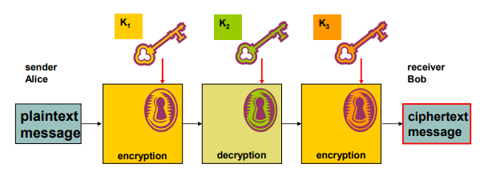 | 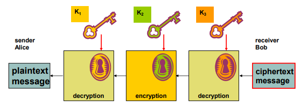 |
Meet-in-the-middle aanvallen verzwakken het encryptieschema aanzienlijk, waardoor de effectieve key strength maar 112 bits bedraagt. Met maar twee verschillende subkeys bedraagt deze maar 80 bits.
AES
AES (advanced encryption standard) gebruikt keys van 128, 192 of 256 bits en werkt in blokken van 128 bits. Belangrijk om te weten is dat deze standaard geen gebruik maakt van het Feistel schema. AES is een stuk veiliger en drie keer zo snel als DES. Modes zoals CBC en CTR zijn ondersteund en het algoritme is gemakkelijk te parallelliseren.
Asymmetric encryption algorithms
Bij symmetrische encryptie maken beide partijen gebruik van een geheime sleutel, maar hoe kunnen zij nu deze sleutel met elkaar delen op een onveilig netwerk? Hier komt public key encryption met de oplossing. Elke gebruiker krijgt twee sleutels:
- Een public key: deze is gekend door iedereen
- Een private key: alleen voor de gebruiker en mag nooit gedeeld worden
Public key cyptografie kan gebruikt worden voor confidentialiteit en authenticatie:
| Confidentialiteit | Authenticatie |
|---|---|
 |  |
| Alice versleutelt het bericht naar Bob met zijn public key, zodat alleen hij het kan lezen. Hiervoor gebruikt hij zijn eigen private key. | Alleen Alice kent haar private key. Als Alice nu een bericht stuurt naar Bob dat ze encrypteert met haar private key, weet Bob dat het bericht van Alice komt als hij het kan decrypteren met haar public key. |
Nu is het dus niet meer nodig om een geheime sleutel uit te wisselen. De sleutels zijn bij deze techniek een heel stuk langer, de performantie is ook een stuk slechter. Een ideale oplossing gebruikt dus public key cryptografie om een geheime sleutel voor een symmetrisch encryptiealgoritme uit te wisselen.
RSA
Dit is het meestgebruikte asymmetrische encryptiealgoritme. RSA steunt op het feit dat het ontbinden van het product van twee grote priemgetallen zeer moeilijk is.
Neem twee priemgetallen
Bereken
Bereken
Kies
Bereken
- Het modulair multiplicatie inverse van
- Het modulair multiplicatie inverse van
Je public key is dan
Encryptie van message
Decryptie
Elliptic curve cryptography
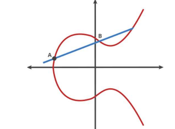
Om een sleutel te genereren met elliptic curve cryptography zal je het volgende moeten doen:
Kies een elliptische curve
- Je kan typisch kiezen uit een lijst van ondersteunde curves
- We beschouwen alleen de gehele waarde van de curve
Kies een generator
- Dit is een punt op de curve
Kies een multiplier
Bereken
- De public key is
- De private key is
- De public key is
Om een waarde te encrypteren:
Kies een factor
Bereken
- Dit is je ciphertext
Om een waarde te decrypteren:
- Bereken
- Alleen de eigenaar van de private key
We zullen het eens narekenen:
Het lijkt erop dat het fout is.
Ik denk dat
Voordelen
Er zijn nog geen efficiënte algoritmen ontdekt om deze methode te kraken (zelfs met quantumcomputers). De key size is een stuk kleiner dan bij RSA, waardoor encryptie 20 keer zo snel is.
Hash algorithms
Hash functions
Hashfuncties kunnen gebruikt worden om sneller te zoeken in een databank, checksums, error correcting codes, maar ook voor beveiliging. Een hashfunctie maakt van een bepaald bericht een hash code of message digest. Deze kan gebruikt worden als zogenaamde vingerafdruk van een bericht, om te zien of er mee geknoeid is.
Een hashfunctie is niet hetzelfde als een symmetrisch encryptiealgoritme. Een hash kan maar in één richting berekend worden en gebruikt veer grotere sleutels en blokken. Bovendien zijn goede hashfuncties beter bestand tegen sleutelaanvallen en zijn ze een stuk efficiënter.
Wat je moet onthouden is dat je een hashfunctie dus niet kan gebruiken voor authenticatie. Een goede hashfunctie moet voldoen aan een aantal voorwaarden:
Moet werken voor berichten van eender welke grootte
Werkt maar in één richting
Weak collision resistance
- Als je een bericht
- Als je een bericht
Strong collision resistance
- Het zou onmogelijk moeten zijn om twee berichten
- Dit is in de praktijk zeer moeilijk. Als er heel veel mogelijke berichten zijn, is de kans logischerwijs groot dat er twee resulteren in dezelfde hash.
- Het zou onmogelijk moeten zijn om twee berichten
Hashwaarden moeten makkelijk zijn om te berekenen
Hash algorithms
MD-5
Wordt gebruikt voor message digest, met een hashwaarde van 128 bits. Dat is niet meer voldoende voor strong collision resistance, maar toch wordt MD-5 nog veel gebruikt.
SHA-1, SHA-2 en SHA-3
Er zijn meerdere versies van SHA (Secure Hash Algorithm)
SHA-1
- Gebruikt een hashwaarde van 160 bits en heeft dus iets betere strong collision resistance dan MD-5.
- Werkt op 512 bit datablokken.
- Beetje trager dan MD-5
SHA-2
- Vier versies: SHA-224, SHA-256, SHA-384, SHA-512
- Weer een beetje trager dan SHA-1
- Meest gebruikte hashalgoritme vandaag de dag
SHA-3
- Volledig nieuw algoritme (Kaccak)
- Gebruikt een 'sponge functie', maar ik denk niet dat dit super nuttige info is
Werking SHA-512
//TODO
MAC algorithms
MAC staat voor message authentication code en gebruikt zowel de plaintext als de gedeelde sleutel als input. Hiermee wordt getracht om de volgende doelen te bereiken:
- Ontdekken of het bericht is aangepast
- Kijken of het bericht van de juiste afzender komt
- Kijken of de volgorde van het bericht is behouden (als je een counter gebruikt)
Het verschil tussen een MAC en een hashfunctie is dat een MAC ook afhangt van de geheime sleutel. Een hash hangt enkel af van het bericht. Je kan MAC dus zien als een soort onomkeerbare encryptie. Dankzij de MAC is nu dus ook authenticatie mogelijk, omdat de geheime sleutel is gebruikt.
CBC-MAC
We encrypteren het hele bericht met CBC en gebruiken enkel het laatste blok als MAC. Dit is gemakkelijk, maar geeft ons weinig flexibiliteit in de keuze van de grootte van ons MAC-blok. Typisch zet je in dit geval de initialisatievector op 0.
HMAC
We hashen een bericht samen met een key. Je kan dit op verschillende manieren aanpakken:
- Dit is gewoon de message en key aan elkaar plakken en het resultaat hashen
- Dit is onveilig door gevoeligheid aan length-extension attacks. Het is makkelijk om data toe te voegen aan het bericht en toch nog een geldige MAC te krijgen
- Heeft dit probleem niet
Uiteindelijk hanteert men:
- Waar
Chapter 4: Network and communication security
SSH
Telnet is onveilig want alles wordt ongeëncrypteerd doorgestuurd. Gebruik SSH. Het staat voor secure shell en is een protocol datondersteuning biedt voor:
- Veilige remote login
- Tunneling
- Bestandsoverdracht
- X-session forwarding en port forwarding
SSH bestaat uit drie delen:
SSH Transport layer protocol
- authenticatie, confidentialiteit en integriteit
- Bovenop betrouwbaar transportlaagprotocol (bv. TCP)
SSH user authentication protocol
- Authenticatie voor clients
- Zit bovenop het vorige
SSH connection protocol
- Multiplext de veilige tunnel voorzien door de vorige twee delen in meerdere logische kanalen
- Kunnen gebruikt worden voor meerdere doeleinden
SSH: Transport layer protocol
SSH maakt gebruikt van security algorithm negotiation. Als een client SSH wilt praten met een server, stuurt de client voor elke categorie (key exchange, MAC, encryptie, ...) een lijst van de algoritmes die hij ondersteunt. De server neemt dan telkens de eerste in zijn lijst die de client ook ondersteunt.
Mooi opgelijst, worden de volgende stappen ondernomen:
- Identification string exchange
- Algorithm negotiation
- Key exchange
- Service request
Onder andere hierdoor voorziet het transport layer protocol, zoals eerder vermeld authenticatie, confidentialiteit en integriteit.
Key exchange
Bij elke ssh-sessie worden er nieuwe symmetrische sessiesleutels gegenereerd en uitgewisseld. Dit gebeurt als volgt:
- Er wordt een gedeelde sleutel gegenereerd met Diffie-Helmann.
- Deze gedeelde sleutel wordt ondertekend met de public key van de client om te authenticeren.
- Nu de gedeelde sessiesleutel is gegenereerd kan de rest van de sessie geëncrypteerd worden met een symmetrische cipher.
Key re-exchange
Je kan op elk moment opnieuw sleutels uitwisselen. Die doe je best wanneer er een verandering in de algoritmes of sessiesleutels is gebeurd. Je kan sowieso best om de zo veel tijd of om de zo veel bits wisselen van sleutel.
SSH: User authentication protocol
Het user authentication protocol zorgt ervoor dat de client zich kan authenticeren bij de server. Dit kan op basis van public key, wachtwoord, maar kan ook op basis van host.
Public key
- De client ondertekent met zijn private key
- De server kijkt dan of deze overeenkomt met de public key van wie de client beweert te zijn
- Dit is computationeel vrij duur en clients hebben typisch niet altijd een keypair op zak
Wachtwoord
- Ja gewoon een wachtwoord wat wil je dat ik hier nog meer zeg
Host based
- Authenticatie op basis van de host van de client
- Zelfde als public key, maar je gebruikt de public host key van de client
- Je kan dus authenticatie voorzien voor meerdere clients op één host, dan moeten we maar geloven dat de client geauthenticeerd is op de host
Message exchange
Ik weet nog niet of dit belangrijk is dus ik gooi het hier maar neer.
- The client sends a SSH_MSG_USERAUTH_REQUEST with a requested method of none.
- The server checks to determine if the username is valid. If not, the server returns SSH_MSG_USERAUTH_FAILURE with the partial success value of false. If the username is valid, the server proceeds to step 3.
- The server returns SSH_MSG_USERAUTH_FAILURE with a list of one or more authentication methods to be used.
- The client selects one of the acceptable authentication methods and sends a SSH_MSG_USERAUTH_REQUEST with that method name and the required method-specific fields. At this point, there may be a sequence of exchanges to perform the method.
- If the authentication succeeds and more authentication methods are required, the server proceeds to step 3, using a partial success value of true. If the authentication fails, the server proceeds to step 3, using a partial success value of false.
- When all required authentication methods succeed, the server sends a SSH_MSG_USERAUTH_SUCCESS message, and the Authentication Protocol is over.
SSH: Connection protocol
Het connection protocol multiplext de secure tunnel voorzien door de SSH transport layer en user authentication layer in meerdere logische kanalen. Elk kanaal krijgt een uniek kanaalnummer aan elke kant van de tunnel. Deze kunnen verschillend zijn bij de client en server.
Een aantal voorbeelden van kanalen zijn:
- Session (shell, file transfer, e-mail, system command, ...)
- X11-connections: voorziet een GUI om applicaties die op een netwerkserver draaien te tonen op een computer
- Local port forwarding (direct TCP/IP): hierover zo meteen meer
- Remote port forwarding (forwarded TCP/IP): same
Een het leven van een kanaal verloopt simpel gezegd in drie stappen: openen, data transfer en sluiten. Moeten we alle uitgewisselde berichten kennen? //TODO
Port forwarding
We kunnen op twee manieren port forwarden met SSH. Bij local port forwarding sturen wij met onze SSH client het verkeer van een andere client veilig door naar de server. Bij remote port forwarding zal onze client in naam van de server handelen. Requests op de gekozen poorten zullen door onze client via een tunnel naar de server gestuurd worden.
We kunnen ook gebruik maken van dynamic port forwarding. Hiermee kunnen we één poort instellen om data te tunnelen naar meerdere locaties. De client moet dan wel gebruik maken van het SOCKS protocol om te vertellen waar zijn verkeer effectief heen moet.
Best Practices
Er zijn een aantal dingen die je best altijd doet:
- Zwakke wachtwoorden uitschakelen
- Gebruik alleen SSH2
- Zet PermitRootLogin op 'no'
- Gebruik password protection voor je private key
Shortcomings
- Niet gemaakt voor trage verbindingen
- Niet gemaakt voor verbindingen die vaak uitvallen
- SSH werk bovenop TCP, dus IP-adres roaming is niet ondersteund
- Niet gemaakt voor hoge netwerk-latency of lange round-trip tijd
Exchanging keys
Hoe cool RSA ook is, het is uitermate traag in vergelijking met symmetrische encryptie. Als we veilige communicatie aan de hand van symmetrische encryptie willen opzetten tussen twee partijen, stuiten we echter op een ander probleem. Hoe zorgen we ervoor dat beide partijen over de geheime sleutel beschikken? We kunnen hem onmogelijk gewoon zomaar over een onveilige verbinding doorsturen, want dan is die geheime sleutel niet zo geheim meer.
We behandelen in dit hoofdstuk een aantal manieren om te doen aan key exchange:
Out of band
- We geven de sleutel fysiek aan beide partijen. Een wachtwoord is een goed voorbeeld hiervan. Je moet iemand effectief een briefje geven of het doorvertellen.
Vorige sleutel hergebruiken
- We kunnen een oude sleutel gebruiken om een nieuwe sleutel veilig door te sturen.
Asymmetrische encryptie
- We kunnen een gegenereerde geheime sleutel asymmetrisch encrypteren zodat alleen de bestemmeling hem kan lezen.
Diffie-Hellman
- Zal ik je straks uitleggen.
Vertrouwde third-party
- We kunnen een vertrouwenspersoon gebruiken die verantwoordelijk is voor de sleutels. Dit kan ook weer op verschillende manieren, waarop we straks dieper zullen ingaan.
Diffie-Hellman
Diffie-Hellman zorgt ervoor dat twee partijen (Alice en Bob) een geheime sleutel kunnen kiezen over een onveilig netwerk, zonder deze sleutel effectief over het netwerk te moeten sturen. Dit doen ze als volgt:
Alice en Bob kiezen samen een priemgetal
- Deze hoeven niet geheimgehouden te worden
Alice kiest een geheim getal
- Ze stuurt Bob:
- Ze stuurt Bob:
Bob kiest een geheim getal
- Hij stuurt Alice:
- Hij stuurt Alice:
Alice berekent:
Bob berekent:
Deze twee zijn aan elkaar gelijk, dit wordt de geheime sleutel.
Ze bewijzen in de cursus niet dat
Zo, dat hebben we dan ook weer gehad. Het coole hieraan is dat de geheime getallen
Een leuke manier om de uitleg van daarnet voor te stellen is aan de hand van een afbeelding uit de slides:
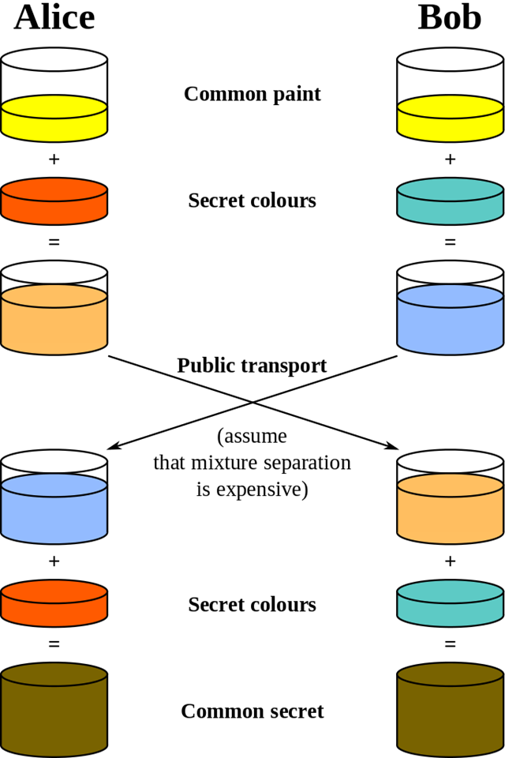
Alice en Bob delen niet hun geheime kleuren, maar een mengeling van hun geheime kleur met een gedeelde kleur. Als de andere partij nu deze mengeling mengt met zijn eigen geheime kleur, komen beide partijen op dezelfde kleur uit.
Tekortkomingen
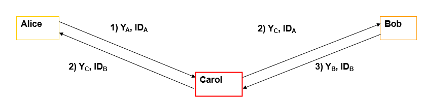
Op zichzelf is Diffie-Hellman eigenlijk niet voldoende om een veilig verbinding op te stellen. De methode is gevoelig aan man-in-the-middle aanvallen. Hier onderschept een aanvaller (Carol) de publieke sleutels van beide partijen, waarna hij met zijn eigen private sleutel een gedeeld geheim met zowel Alice als Bob zal hebben. Hij kan berichten tussen Alice en Bob decrypteren en terug encrypteren, terwijl Alice en Bob denken dat ze enkel met elkaar comuniceren.
Dit probleem wordt verhopen bij enkele varianten op Diffie-Hellman.
Varianten
Diffie-Hellman met ECC (Elliptic curve cryptography)
- Betere veiligheid
Fixed DH
- Elke entiteit heeft een vaste public en private key
- De public keys worden getekend door een certificate authority (CA)
- Dit betekent wel dat de secret key voor elke twee entiteiten vastligt
Anonymous DH
- Dit is de methode die we zonet hebben besproken
- Is wel nuttig als één entiteit nog geen sleutelpaar heeft
Ephemeral DH
- Private sleutels gegenereerd voor elke sessie
- Dus elke sessie een andere geheime sessiesleutel
- Authenticatie gebeurt via een ander algoritme (RSA, DSA, ...)
- Perfect forward secrecy: dit betekent dat als een aanvaller één sleutel kraakt, dit niet de veiligheid van het hele systeem in gevaar brengt (bv. door elke keer een nieuwe sessiesleutel aan te maken).
Key distribution center (KDC)
Een andere manier om ervoor te zorgen dat we sessiesleutels kunnen aanmaken is via een key distribution center. Elke gebruiker moet dan op voorhand over een geheime sleutel beschikken die hem toestaat om veilig met de KDC te communiceren. Dit noemen we de master key. Elke gebruiker heeft een master key gemeen met de KDC. Wanneer een gebruiker dan een sessiesleutel nodig heeft, vraagt hij hem aan de KDC. Deze sessiesleutel wordt dan versleuteld met de master key van die gebruiker en zo met de gebruiker gedeeld.
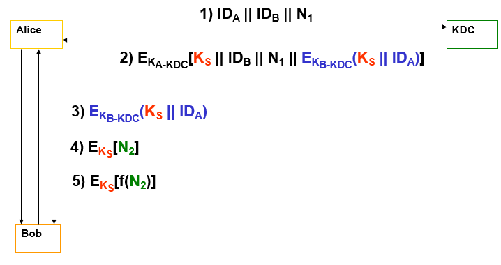
Alice stuurt de KDC haar ID, die van Bob en een nonce
De server antwoordt met een pakketje dat geëncrypteerd is met de master key van Alice. Alleen Alice kan dit openen. Dit pakketje bevat:
- De sessiesleutel
- De sessiesleutel, geëncrypteerd met de master key van Bob.
- De nonce van daarnet, om replay aanvallen tegen te gaan
Alice stuurt de sessiesleutel, geëncrypteerd met de master key van Bob door naar Bob. Alleen Bob kan deze lezen.
Bob stuurt een nonce naar Alice, versleuteld met de sessiesleutel
Alice ontsleutelt dit, voegt 1 aan de nonce toe en stuurt hem terug naar Bob. Zo is ze nu ook geauthenticeerd bij Bob.
Dit noemt men het Needham-Shroeder protocol. Spijtig genoeg is er een aanval mogelijk. Een aanvaller kan met een gekraakte sessiesleutel stap 3 herhalen. Dan kan de aanvaller Bob laten denken dat hij met Alice praat. We kunnen het algoritme verbeteren om dit te voorkomen:
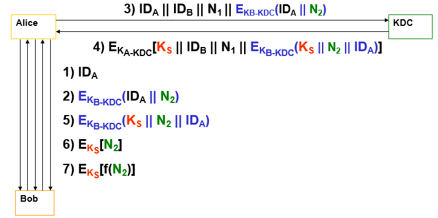
We voegen een paar extra dingen toe:
- Alice gaat eerst Bob erop attent maken dat ze wilt praten
- Bob antwoordt met een nonce die hij encrypteert met zijn master key
- Alice stuurt heel de bazaar door naar de KDC
- De KDC doet hetzelfde als bij het vorige voorbeeld, maar nu zit de nonce van Bob ook in het pakketje voor Bob, waardoor de replay aanval niet meer mogelijk is.
- Alice stuurt het pakketje voor Bob door. Dankzij de nonce weet hij dat het pakketje fresh is.
- Bob encrypteert de nonce met de sessiesleutel
- Alice stuurt de geïncrementeerde nonce terug, opnieuw geëncrypteerd met de sessiesleutel.
Kerberos
Een implementatie die gebruik maakt van een KDC is Kerberos. Hier houdt een Kerberos Authentication Server een long-term-secret (een wachtwoord) bij voor elke gebruiker. De gebruiker kan dan inloggen bij de KAS en een sessiesleutel aanvragen waarmee hij zijn identiteit bij andere gebruikers kan bewijzen.
Dit mechanisme moet spijtig apart geïntegreerd worden voor elke functie zoals bestandstoegang, login, telnet, ... De centrale server is daarenboven ook een single point of failure.
Asymmetrische encryptie
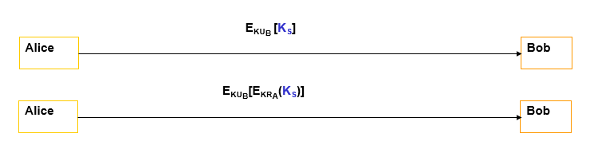
De simpelste manier om een sessiesleutel te delen met asymmetrische encryptie is door de sessiesleutel te encrypteren met de publieke sleutel van Bob. Als we nu eerst deze sleutel encrypteren met de private sleutel van Alice, weet Bob ook dat Alice effectief Alice is.
Het probleem met deze aanpak is dat Bob eigenlijk niet zeker kan weten of de publieke sleutel van Alice effectief van Alice is. We moeten dus op een bepaalde manier weten welke publieke sleutels te vertrouwen zijn en welke niet.
Dit kan op meerdere manieren:
Publieke aankondiging
- Gebruikers sturen hun publieke sleutels de wijde wereld in. Dit is dom want je kan dit even goed vervalsen.
Een openbaar beschikbare lijst
- Gebruikers moeten hun identiteit bewijzen om hun sleutel toe te mogen voegen aan de lijst
Een public-key authority
- Een vertrouwde third-party beheert de public keys van gebruikers.
Public key infrastructure (PKI)
Een betere manier om publieke sleutels te beheren is via een certificate authority (CA). Een certificaat verbindt een publieke sleutel met een identiteit. De CA garandeert dan de geldigheid van deze verbintenis. We schuiven als het ware het vertrouwen door naar de CA, die we 'blind' vertrouwen.
Om een certificaat te krijgen, zal een entiteit dus zijn identiteit moeten bewijzen bij de CA. Om het werk van de CA wat beter verdelen, bestaan er ook registration authorities (RA). Een RA kan aanvragen voor certificaten verwerken, keys genereren voor users, certificaten intrekken, enzovoort. Een third-party validation authority (VA) kan informatie voorzien in naam van de CA.
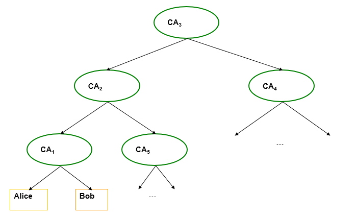
Wie kunnen we nu eigenlijk vertrouwen? We kunnen deze vraag een stuk simpeler maken dankzij de chain of trust. Er bestaat een hiërarchie binnen de verschillende CA's, met helemaal vanboven een (of meerdere) root CA's. Onder de root CA zijn er andere CA's. Door hun certificaat te laten teken door de root CA, moeten we enkel de root CA vertrouwen om te weten dat de CA's op lagere niveaus ook betrouwbaar zijn. Zo ontstaat er een soort ketting van vertrouwen.
Typisch zal je computer of browser een aantel CA's hebben die hij standaard vertrouwt. Via deze CA's kan hij dan andere betrouwbare CA's binnenhalen.
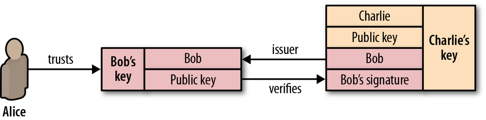
In protocollen zoals PGP daarentegen, is de gebruiker volledig verantwoordelijk voor welke certificaten hij vertrouwt. Er wordt een web of trust model gehanteerd. Kort samengevat: Als Alice Bob vertrouwt, dan zal Alice Charlie vertrouwen als Bob Charlie vertrouwt.
Cross-certification
Cross-certification is een proces waarbij twee CA's overeenkomen om elkaars certificaten te vertrouwen en te erkennen. Beide partijen kunnen dan certificaten uitdelen die door beide partijen vertrouwd worden. Dit kan ook in één richting.
Certificate renewal
Een certificaat heeft een bepaalde vervaldatum. Om de zo veel tijd zal een certificaat vernieuwd moeten worden. Dit gebeurt liefst automatisch. De sleutels van het certificaat worden niet gewijzigd, enkel de datums.
Certificate cancellation
Na zijn einddatum is een certificaat niet meer geldig en kan het dus niet meer gebruikt worden. Een certificaat kan ook voor zijn einddatum ongeldig gemaakt worden, wanneer bijvoorbeeld de private sleutel is gelekt. Dan wordt het certificaat hopelijk op een certificate revocation list (CRL) geplaatst. Dit is een lijst met certificaten die niet meer geldig zijn. We moeten als we de geldigheid van een certificaat willen nakijken deze lijst raadplegen.
Een andere manier om hetzelfde doel te bereiken is het Online Certificate Status Protocol (OCSP). Deze voorziet een manier om een query te sturen om de geldigheid van een bepaald certificaat te controleren.
Beide benaderingen hebben voor- en nadelen. Bij een CRL zal je telkens een lange lijst moeten doorlopen, die misschien niet perfect up-to-date is. Bij OCSP zullen de servers van de CA meer werk moeten doen. Bovendien wordt de privacy van de gebruikers enigszins geschonden doordat de CA perfect kan achterhalen welke websites ze hebben bezocht aan de hand van de queries.
X.509
X.509 is een veelgebruikte standaard voor digitale certificaten en wordt ondersteund door een groot aantal software- en hardwareproducten, waaronder TLS/SSL, PGP, IPSec, SSH en vele anderen. Er kunnen specifieke stukjes informatie, genaamd extensions aan een certificaat toegevoegd worden om extra functionaliteit te definiëren. Deze voegen dan wel weer extra overhead to bij overmatig gebruik.
Je kan een X.509-certificaat op drie manieren verkrijgen:
- Kopen van een CA (VeriSign, ...)
- Een eigen certificate service starten en je certificaat laten tekenen door een CA
- Je eigen certificaten ondertekenen
Er zijn ook een aantal beperkingen aan X.509. Zo is de specificatie redelijk vaag in in sommige vlakken niet specifiek genoeg. De revocation van certificaten wordt ook niet zo goed gedaan. Soms duurt het te lang voordat browsers weten dat een bepaald certificaat ingetrokken is. Nog een probleem hierbij is dat bij het intrekken van een certificaat, de identiteit van de eigenaar ongeldig verklaard moet worden, ook al wou de eigenaar enkel een nieuw sleutelpaar.
Eigenlijk is het baseren van een certificaat op de identiteit van de eigenaar op zich al een slecht idee, want personen veranderen van naam, adres, woonplaats, email, ...
Secure networking protocols
Transport layer: TLS & SSL
SSL (secure socket layer) is een transportlaagprotocol dat draait op poort 443, origineel ontwikkeld om de persoonlijke gegevens van klanten te beschermen bij e-commerce applicaties. Het is geïmplementeerd bovenop TCP, waardoor de bovenliggende applicatielaagprotocollen zoals HTTP en email onveranderd gebruik kunnen maken een veilige verbinding.
Toen SSL gestandaardiseerd werd, is de naam veranderd naar TLS (transport layer security). TLS is dus ongeveer hetzelfde als SSLv3.
Connections and sessions
Een connection is in het kader van TLS een kanaal tussen een client en server. Een connection heeft typisch een korte levensduur. Een session daarentegen, is een manier om een state (zoals de keuze van versleutelingsalgoritmes) bij te houden aan de kant van de server. Een session wordt aangemaakt door het TLS handshake protocol. Wanneer de connection gesloten wordt, kan de session in een volgende connection verdergezet worden. Aan de andere kant kan in eenzelfde connection ook een nieuwe session gestart worden.
TLS protocols
We hebben zonet het TLS handshake protocol vernoemd, maar TLS bestaat eigenlijk uit een aantal meer protocollen.
TLS handshake protocol
Maakt wederzijdse authenticatie tussen client en server mogelijk, dit verloopt volgens deze stappen:
- Phase 0: TCP-verbinding opzetten
- Phase 1: Defining security capabilities: de client en server onderhandelen welke algoritmes gebruikt worden
- Phase 2: Server authentication and key exchange: de server stuurt zijn certificaat en een server_key_exchange bericht als dit nodig is
- Phase 3: Client authentication and key exchange: de client kijkt het certificaat na
- Phase 4: Handshake afmaken: de client stuurt een change_cipher_spec en de server antwoordt met een change_cipher spec, gevolgd door 'finished'
TLS change cipher spec protocol
- Maar één bericht mogelijk: change_cipher_spec
- Zorgt ervoor dat de afwachtende staat wordt gekopieerd naar de huidige staat. Dit slaat op de gekozen encryptietechnieken.
TLS alert protocol
- Berichten voor errors en waarschuwingen, als er bijvoorbeeld ongeldige berichten ontvangen worden of er problemen zijn met de certificaten.
TLS record protocol
Basislaag van TLS, verwerkt de data die verstuurd moet worden
Fragmenteert de data en kan hem optioneel comprimeren (wordt bijna nooit gedaan)
Voorziet confidentialiteit en authenticatie voor TLS-verbindingen
Gebruikt twee sleutels, gemaakt door het handshake protocol
- Eén voor confidentialiteit
- Eén voor integriteit a.d.h.v. MAC
TLS heartbeat protocol
- Nieuw protocol bovenop het record protocol
- Voorziet een liveliness check die op elk moment (behalve tijdens de handshake) kan gestuurd worden
- Stuurt een HeartbeatRequest die moet beantwoord worden met een HeatbeatResponse met exact dezelfde payload
- Heartbleed bug: aanvaller stuurt een HeartbeatRequest met een te lange length parameter en de server antwoordt met data uit zijn geheugen
TLS/SSL vs SSH
Zowel TLS als SSH worden gebruikt om de transportlaag te beveiligen aan de hand van tunnels.
Wat is nu het verschil tussen TLS en SSH? Hier een mooie tabel.
| TLS/SSL | SSH |
|---|---|
| Gemaakt om algemeen transportlaagverkeer te beveiligen | Voornamelijk gebruikt voor veilige shell toegang tot servers |
| Niet aanwezig | Multiplexing, terminal management |
| Wordt gedaan in bovenliggende protocollen | Gebruikersauthenticatie inbegrepen |
| X.509 certificaten | Eigen formaat |
| poort 443 | poort 22 |
| FTP-TLS | SFTP |
| Handshake is efficienter |
Speedups
Er zijn ook een aantal manieren om de overhead van TLS te verminderen:
- Verkorte handshake: door de session bij te houden moeten we als de client een volgende keer bij de server komt geen volledige handshake meer doen.
- False start: al data beginnen sturen wanneer de handshake niet af is. We beginnen al met data sturen als de handshake aan onze kant klaar is, maar we nog geen antwoord hebben.
- Early termination: servers dichterbij de gebruikers zetten om latency the beperken. Deze servers fungeren als proxy voor de origin servers en kunnen dan de round-trip tijd beperken.
- Record size: voor nieuwe verbindingen moeten we de record size klein houden om latency te beperken. Voor actieve verbindingen kunnen we beter grotere records gebruiken voor minder overhead. Het is wel typisch niet mogelijk om de record size in te stellen vanaf de applicatielaag.
- Certificate chain: een te lange certificate chain zorgt voor extra overhead.
Network layer: IPSec & VPN
IPSec
De netwerklaag is gevoelig aan een aantal aanvallen waaronder DOS attacks, replay attacks, source spoofing, spionage en meer. Bovendien voorziet IP geen data integriteit of confidentialiteit. Routeringsapplicaties (die op de netwerklaag draaien) zijn ook gevoelig aan vervalste berichten.
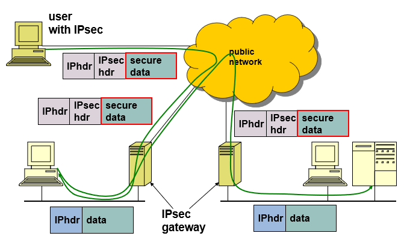
Om een aantal van deze problemen te verhelpen maken we gebruik van IPSec. We kunnen IPSec op twee manieren gebruiken om onze verbinding te beveiligen:
LAN-to-LAN
- Dit is een VPN, we verbinden een twee netwerken (typisch bedrijfsnetwerken) met elkaar over het internet via een tunnel.
- Apparaten in beide netwerken kunnen veilig met elkaar communiceren alsof ze zich in hetzelfde netwerk bevinden
Client-to-LAN
- Denk aan het scenario waar een werknemer van thuis uit met het bedrijfsnetwerk wilt verbinden.
- Dit wordt vaak ook een VPN genoemd.
IPSec heeft een paar voor- en nadelen:
Voordelen
- Onafhankelijk van de gebruikte applicatie (en kan dus beveiliging voorzien voor applicaties die dit niet zelf doen)
- Beveiligingsmechanismen beperkt tot enkele toegangspunten
- Mogelijk transparant voor eindgebruikers (gebruikers moeten zich niet al te veel zorgen maken over beveiliging)
- Individuele beveiliging per gebruiker mogelijk
Nadelen
- Geen beveiliging voorbij de veilige gateway
- Extra overhead door encryptie
- Toegevoegde complexiteit
IPSec modes
IPSec kan in twee verschillende modes draaien:
Layer 2 tunnel mode (default)
- Typisch gebruikt voor een tunnel tussen twee gateways
- De volledige IP datagram wordt beschermd
- Automatische NAT traversal
Transport mode
- Alleen de payload wordt geëncrypteerd
- Dit wordt meestal gebruikt om beveiliging te voorzien voor bovenliggende protocollen
- NAT traversal niet ondersteund, heb je een apart ding (NAT-T) voor nodig
Protocols
IPSec bestaat uit twee protocollen, Authentication Header (AH) en Encapsulating Security Payload (ESP). Beide protocollen kunnen data-integriteit, authenticatie en/of confidentialiteit voorzien. Dit is afhankelijk van de keuze van protocollen.
Authentication header (AH)
Gebruikt voor zowel transport als tunnel mode
- 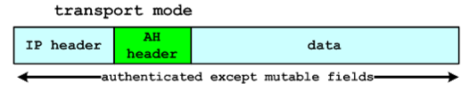
- 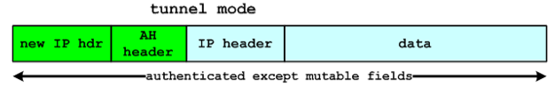
Authenticatie en integriteit wordt bereikt met een versleutelde hashfunctie om een MAC te maken. Deze maakt gebruik van alle velden in het IP datagram die niet in-transit aangepast moeten worden.
Dit protocol voorziet geen confidentialiteit
Encapsulating security payload (ESP)
Ook gebruikt voor zowel transport als tunnel mode
- 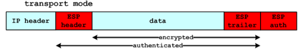
- 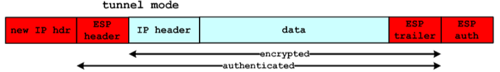
Voorziet confidentialiteit: de data en optioneel de IP-header worden versleuteld
Optionele authenticatie: aan de hand van een MAC
Data origin authenticatie, integriteit, optionele anti-replay
Voorziet bescherming tegen traffic-flow analyse, dit is wel niet mogelijk in transport mode
AH + ESP
De combinatie kan zowel in transport als tunnel mode gebruikt worden
- 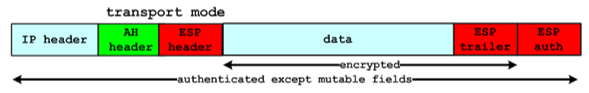
- 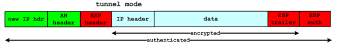
Je kan volgens mij ook één van de twee in tunnel mode gebruiken met de ander in transport mode
Security associations
Een security association (SA) is een éénrichtingsrelatie tussen de zender en de ontvanger. Een SA beschrijft een overeenkomst van netwerkparameters tussen twee entiteiten om een veilige verbinding te kunnen voorzien. Voor bidirectioneel zijn twee SA's nodig. Het is mogelijk om meerdere security associations bovenop elkaar, met verschillende eindpunten vast te leggen. Dit resulteert in een tunnel met meerdere lagen.
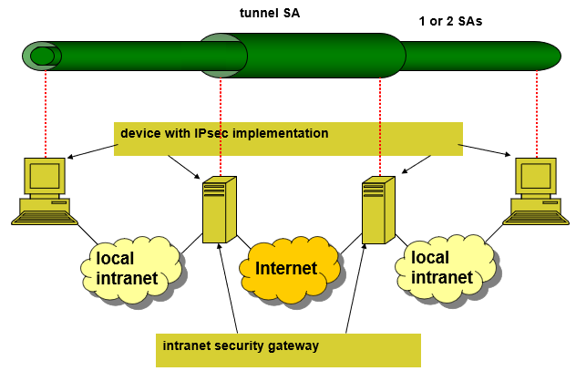
VPN
Een VPN is een veilige site-to-site tunnel, en biedt een hoop meer mogelijkheden dan een veilige remote login. We hebben gezien hoe IPSec kan gebruikt worden om een VPN te maken, maar er zijn nog een hele hoop andere opties zoals PPTP (Point-to-point tunneling protocol), L2TP (Layer 2 tunneling protocol), SSL/TLS, SSH, SSTP (Secure socket tunneling protocol van Windows).
Alhoewel IPSec een zeer goed protocol is, is het zeer complex om te gebruiken. Er zijn een aantal problemen met compatibiliteit tussen verschillende implementaties en bovendien doet IPSec graag moeilijk met NAT. We zullen een aantal van de opties die hierboven vermeld staan bespreken en vergelijken.
Point-to-point tunneling protocol (PPTP)
Ingebouwd op bijna alle client-platformen
Gemakkelijk op op te zetten
Snel
Totaal niet veilig, de gebruikte CHAPv2 authenticatie is vulnerable
Waarschijnlijk zit er een backdoor in voor de NSA
openVPN
Zeer configureerbaar en veilig (meerdere encryptiealgoritmes mogelijk)
Kan firewalls omzeilen
Open source (en dus geen NSA backdoors)
Third party software nodig en soms vervelend om op te zetten
Beveiliging bovenop transportlaag i.p.v. netwerklaag
Layer 2 tunneling protocol
Heeft zelf geen encryptie en gebruikt dus IPSec
Zeer veilig en gemakkelijk op te zetten
Misschien ook mee geprutst door de NSA
Trager dan openVPN en heeft het soms moeilijk met firewalls
Data link layer: WEP & WPA
Op de datalinklaag zijn er een aantal aanvallen mogelijk.
Content address memory (CAM) exhaustion attack
- We sturen heel veel pakketjes naar een switch zodat zijn CAM tabel vol raakt
- Nu moet hij defaulten naar flooding
ARP spoofing
- Gespoofte IP-pakketten broadcasten
DHCP starvation
- Continu DHCP requests uitsturen
Packet overhearing
- Afluisteren bij draadloze netwerken
Deauth attack
- Gespoofte deauthenticatieberichten sturen op draadloze netwerken
Hidden node attacks
Hidden node problem
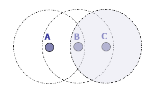
Het hidden node problem doet zich voor in een situatie waar node A en C elkaar niet kunnen horen. Zelfs als A eerst naar het kanaal luistert alvorens hij data begint te sturen, kan het dat C ook data stuurt en er zich een botsing voordoet. Dit kan voorkomen worden met een Request-to-send/Clear-to-send (RTS/CTS). Als A wilt praten met B, stuurt hij eerst een RTS, waarop B antwoordt met een CTS als hij beschikbaar is. C hoort de CTS ook en weet dus dat B bezig is met het ontvangen van data van A.
WEP
Om een draadloze verbinding te beveiligen kan je gebruik maken van WEP. Ondertussen is WEP achterhaald. Hier een klein overzicht van de dingen die WEP wel en niet voorziet:
Authenticatie: met een shared key
Confidentialiteit: RC4 stream cipher
Integriteit: CRC-32
Sleutelbeheer: elke computer gebruikt dezelfde statische pre-shared key. Deze moet handmatig verdeeld worden.
Bescherming tegen replay aanvallen
In een draadloos netwerk kan je (met of zonder WEP) op een aantal verschillende manieren authenticeren:
Open system authentication: eigenlijk gewoon geen authenticatie
Shared-key authentication: met een wachtwoord
Authenticatie met SSID van Access Point
- Als de SSID van de AP niet gebroadcast wordt, kan je alleen authenticeren als je de SSID kent
- Is makkelijk af te luisteren
MAC adres filtering
- Laat alleen bepaalde MAC-adressen verbinden
- Valt gemakkelijk te spoofen
WEP is super onveilig om drie redenen:
- Kleine en statische sleutels: een sleutel is maar 40 bits en moet handmatig ingesteld worden
- Kleine plaintext initialisatievector (IV): de IV van 24 bits wordt in plaintext meegestuurd, waardoor een dictionary attack erg makkelijk is
- Slechte encryptiealgoritmes
WPA
WPA is een heuse verbetering op WEP. WPA gebruikt ook de RC4 stream cipher, maar met een IV van 48 bits. Door de toevoeging van TKIP en het 802.1X authenticatieframework zijn de volgende mogelijkheden verbeterd of toegevoegd:
- Sleutelbeheer: met 802.1X
- Authenticatie: met 802.1X
- Confidentialiteit: met TKIP
- Integriteit
- Bescherming tegen replay-aanvallen
Het 802.1X authenticatieframework gebruikt EAP (Extensible authentication protocol), dat uitbreidbaar en daardoor ook future-proof is, om authenticatierequests af te handelen. Het maakt ook gebruik van RADIUS (remote authentication dial-in user service om veilige communicatie tussen de access point en authenticatieserver mogelijk te maken. In het 802.1X werkt met met drie entiteiten:
- Supplicant: de draadloze client
- Authenticator: typisch de access point
- Authentication server: bevat gebruikersgerelateerde authenticatieinfo
Firewalls
Een firewall is een netwerkbeveiligingssysteem dat wordt gebruikt om toegang tot een computer of een netwerk te beheren en te beveiligen. Een firewall kan worden gebruikt om te bepalen welk verkeer wordt toegestaan om een computer of netwerk te bereiken en welk verkeer wordt geblokkeerd. Dit kan op basis van verschillende criteria, zoals het IP-adres van de verzender, het protocol dat wordt gebruikt of de poort die wordt gebruikt. De bedoeling is om algemene bescherming te bieden tegen aanvallen van buitenaf.
Belangrijk om te weten is dat een firewall als een soort muur rond je bedrijf fungeert. Hij biedt geen bescherming tegen aanvallen van binnenuit, evenals tegen aanvallen die de firewall omzeilen. De bescherming tegen malware is ook beperkt.
We behandelen in de cursus drie soorten firewalls:
Packet filter
Op basis van filter rules wordt bepaald welke pakketjes door mogen en welke niet. Dit kan op basis van source IP, destination IP, source port, destination port, het gebruikte protocol, router interface, ...
De filter volgt ook een mogelijke default policy:
- Block (discard): alle pakketten die niet aan een bepaalde regel voldoen worden tegengehouden.
- Allow (forward): alles wat niet expliciet wordt tegengehouden, mag door.
Deze manier is simpel en efficiënt, maar voorziet geen beveiliging tegen aanvallen op de applicatielaag. Er wordt ook geen gebruikersauthenticatie voorzien.
Makkelijk om fouten in de configuratie te veroorzaken
Gevoelig aan de volgende aanvallen:
- IP spoofing
- Fragmentation attack: IP pakket zo klein fragmenteren dat de TCP header in het volgende pakket zit
Kan verbeterd worden met stateful inspection
- Dan worden hele verbindingen meegevolgd en kunnen dan opeenvolgende pakketjes van dezelfde flow automatisch doorgelaten worden. Dit spaart resources uit.
- Dan moet je alleen outbound rules defniniëren, want antwoorden op requests naar buiten worden automatisch toegestaan.
- Het nadeel is dat dit niet goed werkt voor ander verkeer dan TCP
Circuit-level gateway

Werkt als een relay op het niveau van TCP (soms UDP)
De gateway maakt TCP-verbindingen in naam van de client en fungeert dus als een soort proxy
Inspecteert en filtert pakketten die door de verbinding komen
Voorziet ook authenticatie, zo kan je geauthenticeerd verkeer door de firewall laten
Voorbeeld: SOCKS
- Maar enkele wijzigingen nodig bij client of TCP/IP stack voor gebruik
- Gebruikt voor dynamic SSH port forwarding
Application level gateway
- 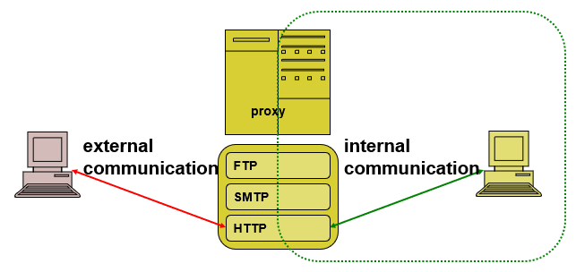
- Deze werkt op de applicatielaag
- Voorziet een proxy voor een specifieke applicatie (http, SMTP, FTP, ...)
- Heeft toegang tot het volledige protocol en kan de pakketten volledig inspecteren
- Net als bij een circuit-level gateway moeten users zich authenticeren
- Is veiliger dan de andere opties, mede doordat de gebruikte applicaties beperkt worden
- Vereist wel veel aanpassingen aan de kant van de gebruiker
- Meer processing nodig
- Wordt niet door alle services ondersteund
Setups
Een bastion is een computer die specifiek is ontworpen om bestand te zijn tegen aanvallen. Deze computer draait typisch één applicatie, zoals een proxy, die blootgesteld wordt aan het internet en fungeert als single point of access.
In een simpele dual homed firewall wordt gebruikgemaakt van een bastion. Deze dient hier als gateway naar het netwerk en zit vlak voor de firewall. Hij heeft twee interfaces: één naar binnen en één naar buiten.
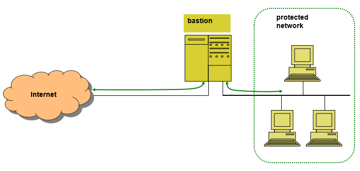
In een meer realistische implementatie van een dual homed firewall zet je voor beide interfaces van de bastion een packet filter. De interne filter, alsook de externe filter, laten dan enkel verkeer van en naar de bastion toe. Dit zorgt er wel voor dat de bastion een single point of failure en een bottleneck in het netwerk wordt. Applicatielaagprotocollen zonder ondersteuning voor proxies zullen bovendien niet werken op deze set-up.
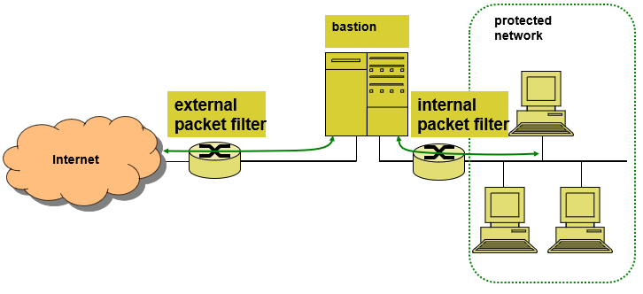
In een andere situatie kan je bijvoorbeeld een extern subnetwerk toevoegen, deze bevat dan niet-kritische services, zoals een publieke webserver.
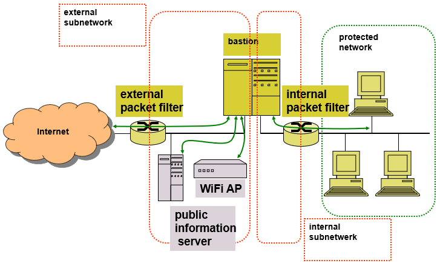
Een andere mogelijke setup is een screened host firewall, single homed bastion, waar meer flexibiliteit mogelijk is in ruil voor minder veiligheid.
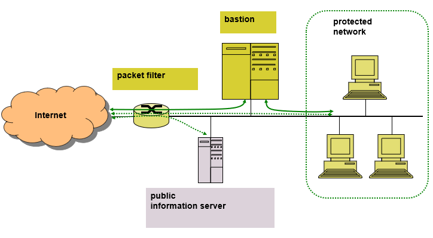
Een screened subnet firewall is een mooie balans tussen de vorige twee setups. Er wordt een geïsoleerd subnetwerk gemaakt dat in de gaten wordt gehouden door de bastion. Dit noemt men een DMZ (demilitarized zone).
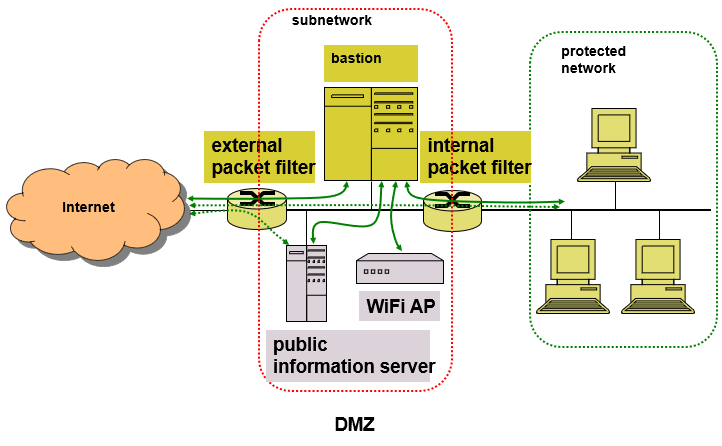
Chapter 5: Software and systems security
Secure applications
We zullen nu de beveiliging van een aantal applicaties bespreken.
Email: MIME & S/MIME
SMTP is een beetje gebrekkig. Het ondersteunt alleen 7-bit ASCII en de implementatie verschilt soms, met nog andere bijkomende problemen die me niet zo veel kunnen schelen.
MIME (multipurpose internet mail extensions) breidt email uit om ondersteuning te voorzien voor:
- Andere encodings
- Attachments
- Message bodies met meerdere delen
- Header informatie in andere encodings
De specificatie beschrijft vijf nieuwe headervelden, nieuwe inhoudsformaten en andere transfer encodings. De nieuwe headers zijn:
- MIME-version
- Content-Type: geeft aan welk soort inhoud de mail bevat (text/plain, image/jpeg, application/octet-stream, ...)
- Content-Transfer-Encoding: beschrijft hoe de inhoud wordt ge-encodeerd voor overdracht (8-bit, base64, quoted-printable)
- Content-ID: een identifier voor een specifiek stuk content
- Content-Description: beschrijving van de inhoud
S/MIME (secure/MIME) voegt veiligheidsuitbreidingen toe aan MIME. Het zorgt ervoor dat gebruikers versleutelde berichten en bijlagen kunnen sturen en ontvangen. Het protocol maakt gebruik van certificaten en PKI om deze functies te kunnen voorzien. De ondersteunde functies zijn:
Enveloped data
application/pkcs7-mime; smime-type = enveloped-data- De inhoud wordt versleuteld
Signed data
application/pkcs7-mime; smime-type = signed-data- Er wordt een handtekening toegevoegd
- De inhoud en handtekening worden ge-encodeerd in base64
Clear-signed data
multipart/signed- Er wordt een handtekening toegevoegd, maar enkel de handtekening wordt ge-encodeerd in base64
- Een ontvanger die S/MIME niet ondersteunt kan het bericht lezen, maar de handtekening niet controleren
Signed and enveloped data
- Combinatie van versleuteling en digitale handtekening
S/MIME ondersteunt verschillende algoritmes voor hashing, key exchange, handtekeningen en symmetrische versleuteling. Het voegt ook nieuwe content-types toe, waaronder diegene in de opsomming hierboven.
In het algemeen volgt S/MIME de volgende stappen:
MIME bericht wordt gegenereerd volgens de gewone MIME regels
Het bericht wordt verwerkt tot een PCKS object volgens de S/MIME regels
- Samen met veiligheidsinfo zoals: algoritmes, certificaten, ...
Het PCKS wordt behandeld als een message body en ingepakt in MIME (met gepaste headers)
Het bericht of deelbericht moet omgezet worden in canonical form
- Dit is een gestandaardiseerd formaat en voorkomt dubbelzinnigheden
Enveloped data
Om de inhoud van een bericht te versleutelen, gebruik je in S/MIME de functie envelopedData. Om een bericht op deze manier te maken volg je deze stappen:
Maak een sessiesleutel
Encrypteer de sessiesleutel voor elke ontvanger
Maak een veld
RecipientInfovoor elke ontvanger, deze bevat:- Identificatie van het certificaat van de ontvanger
- Encryptiealgoritme voor de geëncrypteerde sessiesleutel
- Geëncrypteerde sessiesleutel
Encrypteer het bericht met de sessiesleutel
RecipientInfo+ geëncrypteerde inhoud =envelopedDataEncodeer de
envelopedDatain base64
Signed data
Om een bericht te ondertekenen worden de volgende stappen ondernomen:
Kies een hashfunctie
Bereken de hashwaarden van het te ondertekenen bericht
Versleutel de hashwaarden (met bv. RSA)
Maak een veld
SignerInfomet:- Certificaat van de afzender
- Identificatie van de hashfunctie en encryptiealgoritme
- Versleutelde hashwaarde = digitale handtekening
SignerInfo + het bericht =
signedDataEncodeer de
signedDatain base64
Bij clear signing bestaat het bericht uit twee delen. Eén deel is onveranderd, zodat het ondersteund wordt door MIME. Het tweede is hetzelfde als het resultaat van signedData, maar het veld voor het ondertekend bericht blijft leeg.
We kunnen een certificate registration request sturen door hetzelfde proces te doorlopen, maar met een lege message body en SignerInfo. We voegen dan een veld certificationRequestInfo toe. Dit bevat de naam en public key van het te verifiëren certificaat. Het request wordt dan ondertekend met de private key van de gebruiker. Dit wordt gebruikt voor berichten die alleen certificaten of CRL's bevatten.
Extensions
S/MIME voorziet ook een aantal uitbreidingen:
- Signed receipts: bewijs van ontvangst
- Security labels: vertelt hoe gevoelig de inhoud is. Dit is nuttig voor authorisatie
- Secure mailing lists: Mail List Agents (MLA) worden gebruikt om veilig mails naar veel ontvangers te sturen
- Signing certificates: bindt een certificaat aan een bericht om vervalsing door substitutie van het certificaat te vermijden
Web applications
Vulnerabilities
Is je applicatie wel effectief zo veilig als je denkt? Ookal gebruik je een state-of-the art firewall en het hoogste encryptieniveau van TLS, kan je door fouten in je applicatie nog steeds beveiligingslekken creëren. Hier zien we wat er allemaal kan mislopen.
Misconfiguratie
- Outdated software is altijd een probleem
- Te gemakkelijke wachtwoorden
- Slecht verstopte source code
- Een machine met een trojan horse erin (hoezo is dit misconfiguratie??)
Client-side controls
- Reken niet op client-side dingen die niet op de server gecontroleerd worden
Direct object reference
- Referenties naar interne objecten die niet beschermd zijn
- Een hacker kan hier ongeautoriseerde toegang tot krijgen (forceful browsing)
Authentication errors
- zwakke wachtwoorden, brute-force'bare wachtwoorden
- Verbose foutberichten
Cross-site scripting (XSS)
Verloopt in 4 stappen:
- Aanvaller steekt kwaadaardige code in kwetsbare webserver
- Slachtoffer bezoekt deze webserver
- Kwaadaardige code komt mee met de gevraagde inhoud
- De code wordt uitgevoerd op de machine van de gebruiker, met de privileges van de webserver
Drie soorten:
Non-persistent attack (reflected)
- Bijvoorbeeld een script in een URL steken die je doorstuurt
- Om dit tegen te gaan moet je input sanitizing gebruiken en ervoor zorgen dat er zo weinig mogelijk gevoelige info wordt getoond aan de gebruikers van je site
Persistent attack
- Als je een script in een invoerveld stopt dat op een pagina wordt getoond
- Een kwetsbare opslag (bv. database) slaat de code effectief op, deze wordt uitgevoerd op elke machine die de inhoud laadt
DOM-based attacks
- Een client-side script dat wijzigingen maakt aan de DOM
- De HTTP-response zelf wordt niet aangepast
Mogelijke aanvallen
- Cookie stealing
- Website redirection
- Phishing
- Privacy violation
- Run exploits: een script injecteren dat gebruik maakt van kwetsbaarheden in de browser en plugins. De computer van het slachtoffer kan deel worden van een botnet.
- Javascript malware
SQL Injection
- SQL code in invoervelden injecteren
Cross-site request forgery (CSRF)
Verloopt in 4 stappen
- Slachtoffer gaat naar kwetsbare website
- Slachtoffer bezoekt kwaadaardige pagina op website van de aanvaller
- Kwaadaardige inhoud wordt afgeleverd aan het slachtoffer
- Het slachtoffer stuurt onvrijwillig een request naar de kwetsbare website
Je moet wel aan beide resources tegelijk kunnen. Dit is makkelijk te bereiken
uTorrent
Defences
- Threat and risk analysis
- Security training
- Design review
- Handmatige en geautomatiseerde code review
- Handmatige en geautomatiseerde testen
- Online monitoring
Om XSS te voorkomen doe je best input sanitation. Dit kan met een whitelist, dan laat je alleen de waarden door die toegestaan zijn. Je kan ook onvertrouwde waarden tegenhouden met een blacklist. Dit is meestal geen goed idee.
SQL-injection kan voorkomen worden met prepared statements of met stored procedures.
Secure systems
Authentication methods
Passwords
Een wachtwoord wordt typisch opgeslagen als een hash digest in plaats van het effectieve wachtwoord op te slaan. Dan is de schade beperkt bij een lek.
Ookal zijn ze simpel en relatief veilig, is meerdere wachtwoorden onthouden vreselijk en stellen slechte wachtwoorden een groot beveiligingsrisico.
Password cracking
Er zijn een aantal manieren om een wachtwoord te kraken.
- Brute-force
- Dictionary aanval
- Hash Chains
- Rainbow table
De uitleg van brute-force en dictionary aanvallen ga ik weg laten want die liggen redelijk voor de hand.
Hash Chains
Een hash chain is een coole manier om de cleartext te vinden die resulteert in een bepaalde hash. Normaal gezien zou je een tabel hebben met alle hashwaarden voor alle mogelijke karaktercombinaties van een bepaalde lengte. Als je een hash chain gebruikt heb je dit niet nodig.
Om een hash chain te maken heb je twee dingen nodig:
- Een hashfunctie
- Een reductiefunctie
Neem nu een bepaald wachtwoord, bijvoorbeeld aaaaaa. Door afwisselend
In onze tabel slaan we enkel het begin- en eindpunt van de ketting op. Als we nu een hash willen kraken, passen we weeral afwisselend
Het voordeel van deze aanpak is dat hij veel minder geheugen inneemt, met als trade-off wat meer CPU gebruik. Spijtig genoeg is het moeilijk om deze aanpak te optimaliseren voor veelvoorkomende wachtwoorden. Het kan ook dat chains in elkaar uitkomen door een slechte
Rainbow tables
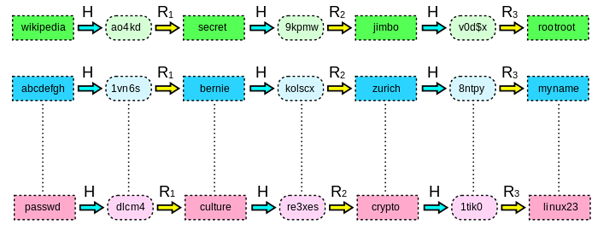
Rainbow tables proberen de problemen van hash chains wat te verhelpen. We vervangen de reductiefunctie door een sequentie van reductiefuncties die doorlopen worden. Kettingen komen dan alleen samen als ze dezelfde waarde op dezelfde iteratie hebben.
Mitigation
Table-aanvallen kunnen voorkomen worden door een salt toe te voegen aan je wachtwoord alvorens het te hashen. Zo resulteren zelfs identieke wachtwoorden in een andere hashwaarde, waardoor ze een stuk moeilijker te kraken zijn.
Biometry
Er zijn drie manieren om the authenticeren:
- Iets dat de gebruiker weet
- Iets dat de gebruiker heeft
- Iets dat de gebruiker is
//TODO de rest vind ik niet super belangrijk
Security tokens
We houden secret/private keys in een usb stick. Dan kunnen ze bijna onmogelijk gevonden worden door malware. Typisch wordt dan two-factor-authentication gebruikt, waar je dan bovenop de token een pin nodig hebt. Dit is bijna onkraakbaar.
Je kan een token verbonden met een host gebruiken. De token doet dan cryptografische bewerkingen op een bericht gekregen van de host. Er zijn ook tokens die zich niet verbinden met een host. Hier is de input gelimiteerd. Zo een token kan bijvoorbeeld een keypad hebben waarin je dan een code ontvangen van de site ingeeft. De token berekent dan het antwoord op deze challenge, waarmee je kan authenticeren.
Trusted OS
Een OS is vertrouwd als het aan de volgende voorwaarden voldoet:
- Memory protection
- Generation object access control
- User authentication
Policies
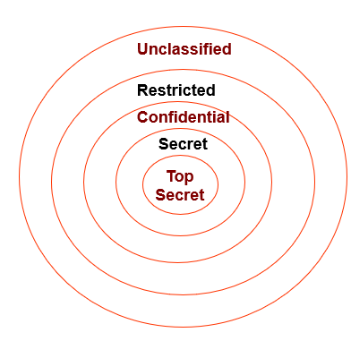
We kunnen verschillende niveaus van gevoeligheid van informatie vastleggen.
Access control
Dit kan op verschillende manieren:
Discretionary Access Control (DAC)
- De eigenaar bepaalt de toegang tot de resource die hij heeft gemaakt
Mandatory Access Control (MAC)
- Toegang wordt bepaald door een administrator
- Verplicht gebruik van regels of labels
Role-based access control
- Een administrator bepaalt de toegang
- Elke gebruiker krijgt een bepaalde rol, die hem toegang geeft tot bepaalde dingen
OS Kernel
//TODO
Disk encryption
Je kan op drie manieren je schijf encrypteren:
Manual
- De gebruiker moet zelf aangeven welke folders of files geëncrypteerd moeten worden.
File-system level
- Individuele files of folders worden geëncrypteerd door het besturingssysteem
- Aparte key per file/folder
- Integratie met access control features
Full disk encryption
- De volledige schijf encrypteren (inclusief boot sector)
- Dit gebeurt typisch op een lager niveau dan het OS
- Je kan niet per ongeluk een file vergeten te encrypteren
- Wel gevoelig aan keyloggers
- Je kan per ongeluk al je data kapotmaken
Secure software
Malware
Malware, kort voor malicious software is een soort software dat gebruikt wordt om de normale operatie van je computer te verstoren, gevoelige informatie te stelen of toegang te krijgen tot private systemen.
Hier een aantal voorbeelden:
Logic bomb
- Kwaadaardige code die met opzet in een stuk software is geïmplementeerd.
- Wordt geactiveerd als een bepaalde conditie voldaan is in de software
- Vaak geplaatst door boze mensen die wisten dat ze ontslagen gingen worden
Backdoor
Een ongedocumenteerd toeganspunt tot een bepaalde software
Kan in een programma zitten door een fout, maar ook met opzet (NSA)
Een andere malware kan ook een backdoor maken in vertrouwde software
Aantal verschillende types:
- Software backdoors: in de broncode
- Object code backdoors: pas objectcode aan ipv softwarecode (moeilijker te detecteren)
- Assymetric backdoors: alleen bruikbaar door de originele maker
- Compiler backdoors: de compiler is ondermijnd om backdoors te maken in gecompileerde programma's
Trojan horse
- Schijnbaar nuttige software die kwaadaardige code bevat
- Vraagt meestal extra privileges bij installatie
Spyware
- Verzamelt gevoelige informatie
Adware
- Een variant op spyware waar de bedoeling is om gerichte reclame te sturen om geld te verdienen
Ransomware
- Beperkt toegang tot computersysteem met als oogmerk losgeld te verkrijgen in ruil voor toegang.
- Typisch wordt het systeem geëncrypteerd en moet de eigenaar betalen voor de sleutel
Scareware
- Toont berichten om de gebruiker schrik aan te jagen
- Met als bedoeling om hem iets te doen betalen of te bellen naar een betaalde lijn
Traditioneel virus
Software met de capaciteit om andere software te infecteren
Maakt gebruik van een 'drager'-programma om zichzelf voort te planten
Vaak OS of hardware specifiek
Lifespan typisch in 4 fasen
- Sleeping phase: wacht op activatie
- Propagation/replication: verspreid en infecteert andere programma's/systemen
- Activation trigger: als een bepaalde conditie voldaan is
- Execution: de inhoud wordt uitgevoerd
Worm
- Autonoom programma dat zich automatisch propageert van netwerk tot netwerk
- Een cool voorbeeld: de Morris worm had op een bepaald moment 10% van het internet geïnfecteerd
- Kan zich heel snel verspreiden
Blended threats
- Een combinatie van de vorige opties
- De meeste botnets gebuiken blended threats
Infection methods
Er zijn een aantal verschillende manieren waarop je systeem kan geïnfecteerd worden met malware:
- Social engineering
- OS vulnerabilities
- Software vulnerabilities: bv. buffer overflow
Infection targets
Memory behavior
Non-memory-resident
- Wanneer uitgevoerd: doet zijn ding en sluit weer
Memory-resident
- Blijft permanent in het geheugen
Macro virus
- Typisch een virus in een document dat zich uitvoert als je het opent
Boot sector virus
Stealth strategies
Om detectie te vermijden, kunnen virussen een aantal dingen doen zodat geïnfecteerde bestanden minder verdacht zijn. Zo is het belangrijk dat je virus de datum waarop het bestand laatst is gewijzigd niet aanpast. Om detectie moeilijker te maken zal een goed virus de bestandsgrootte ook niet wijzigen, maar zich eerder nestelen in een ongebruikt deel van de code. Nog een stap verder, kunnen virussen ook read-requests van het besturingssysteem onderscheppen.
Je kan ook bekende viruspatronen verbergen door code obfuscation dit kan met:
- Encryptie: de body van het virus encrypteren
- Polymorphic virus: de encryptiemodulen ook wijzigen
- Metamorphic virus: een virus dat zichzelf wijzigt om detectie moeilijker te maken
Virussen kunnen zichzelf ook actief verdedigen door bijvoorbeeld de antivirussoftware te verwijderen of zichzelf automatisch opnieuw te installeren.
Countermeasures
Wat kan je nu doen om te voorkomen dat je wordt geïnfecteerd met malware? Hier een aantal dingen die je kunnen helpen:
Virusscanner
Eerste generatie: Zocht alleen naar virus signature en hield bestandsgrootte in de gaten. Daardoor werkte het alleen op bekende virussen
Tweede generatie: verifieert ook data-integriteit van bestanden, verfijnde herkenning die malwarepatronen analyseert
Nieuwere generaties: behavior based identification waardoor herkenning van nieuwe malware ook mogelijk is
- Programma initieel op ge-emuleerd systeem draaien
Voorzichtig zijn
Als je gewoon oplet wat je doet kan je veel problemen voorkomen
- Open geen vreemde bijlagen
- Zet macro's uit in documenten
- Kijk naar de URL voor je erop klikt
- Installeer geen onnodige communicatiesoftware op je server (ftp, telnet, ...)
- Installeer tijdig updates
Software cracking
Hoe kunnen we beveiligde software kraken zodat we ons geld lekker kunnen houden?
Software serial crack
Om een serial crack te maken moet je eerst je programma de-assembleren en zoeken naar de string die wordt getoond als je een ongeldige serial invoert. Verander de jump naar die lijn in de assemblycode van jne naar nop, dan wordt de spronginstructie die het programma normaal gezien de tekst: 'invalig serial' laat tonen niet uitgevoerd. Als de ontwikkelaars geen andere maatregelen hebben genomen, kan je nu het programma zonder serial uitvoeren.
Key generator
Een key generator of keygen is een programma dat geldige serial keys kan genereren voor een bepaalde software. Soms worden deze legaal verdeeld door de ontwikkelaars van de software om veel kopieën te kunnen activeren in grote bedrijven.
Hackers kunnen ook een keygen maken door de software te reverse-engineeren.
Code injection
Bij code injection gaan we proberen om nieuwe code in een programma te steken. Typisch gaan we code in code caves proberen stoppen. Deze aanpak is makkelijk, maar niet zo flexibel.
Defenses
Hoe kunnen we ons programma beschermen tegen krakers?
We kunnen de code zichzelf laten aanpassen om reverse engineering tegen te gaan. Code obfuscation op het het niveau van CPU instructies is ook een optie. We kunnen ook een digitale handtekening toevoegen die de integriteit van de code controleert. Ten slotte kunnen we ook de code encrypteren. Ik weet niet precies hoe dat in zijn gang gaat, maar dat is dan weer een ander verhaal.
Chapter 6: Intrusion detection
Eerst en vooral is het best moeilijk om te definiëren wat een inbraak nu precies is. Is een port scan een inbraak? We differentiëren tussen een aanval en een inbraak. Om beide tegen te gaan hebben we twee methodes:
Attack detection (AD)
- We zetten een IDS buiten ons bedrijf om te zien hoe vaak er geprobeerd is om binnen te raken.
Intrusion detection (ID)
- Een IDS binnen het bedrijf zal ongepast gedrag opsporen
- Als de IDS afgaat is het code rood
Hoe ik het begrijp spreken we over een aanval als er geprobeerd is om binnen te raken. Als de aanvaller effectief toegang heeft gekregen tot het systeem, zitten we met een inbraak. In het ideale scenario doen we best zowel ID als AD, maar ID moet de prioriteit krijgen.
Intrusion detection
Het doel van intrusion detection is om indringers te detecteren. Dit liefst voordat ze effectief binnen zijn. Een goeie IDS zou zowel interne als externe aanvallen kunnen opsporen, maar hij doet doorgaans niets om ze te verhelpen. Eenmaal een interne aanval is gedetecteerd is het meestal te laat. Een IDS is dus geen vervanging voor een goeie firewall.
Ideaal spoort een IDS een aanval zo snel mogelijk op. Dit schrikt hopelijk potentiële aanvallers ook af. Verder houdt de IDS ook informatie bij over gebruikte aanvalstechnieken.
Audits
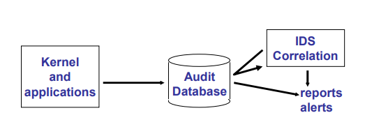
Een audit is een controle die de IDS gaat uitvoeren. Dit kan host based of network based . Gebruikersactiviteit wordt gelogd in een audit database. De audit records in deze databank zijn dan een input voor de IDS die alles kan nakijkt om te zien of er geen verdachte dingen zijn gebeurd.
Er zijn twee types van audit records:
- Native audit records: deze worden door het besturingssysteem zelf aangemaakt
- Detection specific audit records: er wordt IDS-specifieke informatie verzameld. Het nadeel is dat je nu twee auditing systemen moet draaien op je machines
Je kan audits op twee manieren verzamelen:
Host-based
- HIDS (host intrusion detection system)
- Data wordt verzameld in het besturingssysteem van de host zelf (system logs, ...)
- Hoge kwaliteit en veel informatie
- Vaak wel systeem-specifiek
- Impact op performance
- Hosts zijn vaak het doelwit van aanvallen (kan logs corrupten of aanpassen)
Network-based
- NIDS (network intrusion detection system)
- Data verzamelen van hub of switch
- Geen performance impact
- Minder goeie data, je kan ook pakketten verliezen op het netwerk
- Kan niet om met geëncrypteerde data of vreemde protocollen
Een andere manier van aanpak is de inline (real-time) approach. De bedoeling is hier om data te auditen op het moment dat het gegenereerd wordt. De correlatie is hier wel beperkt, inline is sneller, maar biedt maar een beperkt zicht. Dit kunnen we verbeteren door significante events door te sluizen naar een audit station. Zo maken we eigenlijk gebruik van beide technieken.
Practical approaches
Hoe gaat een IDS nu effectief verdachte gebeurtenissen opsporen? Dit kan hij op drie manieren:
Statistical approach
Probeert normaal gedrag te definiëren
Gebaseerd op informatie van normaal gebruikersgedrag over een lange tijd
Drie manieren van aanpak
Threshold detection: probeert een 'threshold' vast te leggen voor de frequentie waarop bepaalde gebeurtenissen voorkomen. Komt er iets boven de threshold, wordt het gemarkeerd als een intrusion. Is op zichzelf niet zo efficiënt.
Profile based: probeer (handmatig) een 'activiteitsprofiel' samen te stellen voor elke gebruiker of gebruikersgroep. Afwijkingen op deze profielen worden gemarkeerd als intrusion.
Anomaly detection: het systeem wordt automatisch geanalyseerd om vast te leggen wat normaal is. Gebruik statistiek om te detecteren wanneer er afgeweken wordt. Dit kan met (een combinatie van) verschillende technieken:
- Statistical analysis: normaal gedrag van gebruikers, met standaardafwijking, ... deviaties van de norm detecteren.
- State change analysis: de 'staat' van het systeem modelleren en afwijkingen van de norm opsporen.
- Neural networks: patroonherkenning
- Operational model: als je op voorhand al een idee hebt wat verdacht is, zonder analyse van audit records.
Kan eender welke mogelijke aanval opsporen, met als trade-off veel vals-positieven/negatieven en slechte categorisatie
Rule-based approach
Probeert abnormaal gedrag te definiëren
Detecteert gekende aanvallen
Ook goed voor legitieme gebruikers die bijvoorbeeld hun rechten misbruiken
Verschillende manieren van aanpak:
- Misuse detection: (penetration identification) experten proberen te definiëren wat een aanval precies inhoudt. Gelijkaardig aan virusscanner. Vaak updates nodig
- Burglar alarms: variant op het vorige, maar specifiek op bepaalde site. Komt overeen met een alarm in je huis zetten. Het is gemakkelijk, maar je moet wel oppassen dat je het zelf niet doet afgaan.
Hybrid approaches
- Combinatie van beide
- Compromis tussen vals positieven en de capaciteit om echte indringers te detecteren
- Misuse detection blijkt meestal het nuttigst, om dan achteraf als er iets fout gaat met anomaly detection meer info proberen te verkrijgen.
Intrusion prevention systems
Een IPS breidt de functionaliteit van een IDS uit door ook effectief een interventie te doen bij de detectie van een aanval. Meer infor wordt hier niet over gegeven.
Honeypots
Een honeypot is een fake systeem, gemaakt om aanvallers af te leiden of in de val te lokken. Typisch wordt een honeypot gevuld met nepdata en kwetsbare software, op zo een manier dat hij een gemakkelijk doelwit wordt voor aanvallers. Bij een inbraak kunnen we met een goede IDS dan al informatie verkrijgen over de aanvaller om toekomstige aanvallen te voorkomen.
Limitations
Er zijn natuurlijk een aantal beperkingen bij het gebruik van een IDS:
- Valse alarmen
- Vaak updates nodig
- Kan geen bugs voor ons oplossen
- Grote hoeveelheden data
- ...
Verder kan een aanvaller ook detectie vermijden door fragmentatie van pakketten. IDS'en herkennen typisch bepaalde protocollen door het gebruik van bepaalde poorten. Een aanvaller kan die omzeilen door geen defaults te gebruiken. Heeft de aanvaller toegang tot een gedistribueerd botnet, dan kan hij een gecoördineerde aanval doen vanuit meerdere locaties, mogelijk met laag bandbreedtegebruik per host om langs de IDS te glippen of een DDOS-aanval te doen.
Chapter 7: Future trends
Cryptocurrency & blockchains
Virtuele munten bestaan al een tijdje, zo had je vroeger al credits op facebook of gold in World of Warcraft. De volgende stap in de ontwikkeling van virtuele munten is cryptocurrency. Cryptografische methodes worden gebruikt om transacties te beveiligen en om nieuwe munten te genereren. Cyptomunten zijn typisch gedecentraliseerd.
BitCoin
Een munt moet voldoen aan de volgende veiligheidsvoorwaarden:
- Authenticatie: is de munt echt? betaal ik de juiste persoon?
- Integriteit: voorkomen dat een munt twee keer uitgegeven wordt of een transactie ongedaan gemaakt wordt
- Availability: een transactie moet op elk moment mogelijk zijn
- Confidentiality: privacy
Blockchain
Bitcointransacties worden bijgehouden in blokken. Deze maken deel uit van de blockchain. De blockchain is een databank gedistribueerd over het internet.
Het minen van bitcoin komt eigenlijk overeen met het verwerken van transacties. Nodes die bitcoins willen krijgen, moeten records toevoegen aan de blockchain door een nonce te zoeken die, als hij samen met de hash van het vorige blok wordt gehashed, kleiner is dan een bepaald getal. Dit noemt men een proof-of-work.
Deze uitkomst wordt dan samen met de vorige hash opgeslagen in het huidige blok, waardoor deze wordt gelinkt met het vorige blok.
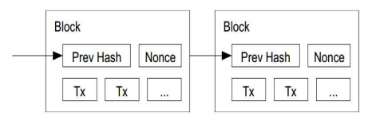
Een vervelende eigenschap van bitcoin is dat om double-spending te voorkomen er bij elke transactie een 10 minuten lang verificatieproces doorlopen moet worden. Nog een interessant feitje is dat het aantal bitcoins op de planeet nooit boven de 21 miljoen kan gaan omdat de hoeveelheid bitcoins die worden uitgedeeld per blok exponentieel omlaag gaat.
Omdat deze proof-of-work aanpak zo veel energie verspilt, is er ook een alternatief. Door een proof-of-stake hoeft er niet zo veel energie verspild te worden. De node die het volgende block mag verwerken en dus een coin krijgt kan random gekozen worden, op basis van coin age of op basis van votes.
Advantages/disadvanteges
Laag risico op inflatie
Vrijheid in betaling (geen onverwachte fees, ...)
Geen persoonlijke informatie vrijgegeven
Transparant
Kan niet failliet gaan
Volatiliteit
Niet algemeen geaccepteerd
Slechte reputatie
Gemakkelijk kwijt te raken
Energiekosten voor proof of work
Tot zover de theorie. Veel succes.
Examenvragen
Test Jezelf
Chapter 2
Explain the difference between confidentiality, authentication, access control / authorization, data integrity, non-repudiation and availability
- Confidentialiteit: data kan alleen gelezen worden door voor wie hij bestemd is.
- Authenticatie: het verifiëren van de identiteit van een gebruiker, apparaat of systeem.
- Autorisatie: het verlenen of weigeren van toegang tot een bron op basis van identiteit.
- Integriteit: Garantie van de juistheid en consistentie van data. De data is gegarandeerd niet aangepast in overdracht.
- Non-repudiation (onweerlegbaarheid): een persoon kan niet ontkennen dat hij een bepaalde actie heeft ondernomen.
- Availability: garantie dat het systeem toegankelijk is en correct functioneert voor geautoriseerde gebruikers.
Which of the above security goals are realized in the network protocols from Chapter 4?
| Protocol | Goals |
|---|---|
| SSH | confidentiality, authentication, data integrity |
| Diffie-Hellman | confidentiality, authentication |
| X.509 | confidentiality, authentication, data integrity, non-repudiation |
| SSL/TLS | confidentiality, authentication, data integrity |
| IPSec Tunnel mode | confidentiality, authentication, data integrity, access control/authorization |
| IPSec Transport mode | confidentiality, data integrity, access control/authorization |
| openVPN | authentication, data integrity, access control/authorization |
| WEP | confidentiality |
| WPA | confidentiality, authentication |
Ik heb dit laten genereren door chatGPT lol.
Why are sequence numbers (or nonces) added to messages? Is it a good idea to use a time stamp for this purpose?
This is to ensure that the message is unique and it hasn't been replayed or tampered with. Using a timestamp is not an excellent idea, because an attacker could guess the timestamp if the sender and receiver are not perfectly synchronized. A low precision in the timestamp could make this even easier.
Which counter measurements can be taken against DoS and DDoS attacks?
(dit staat nergens in de cursus voor zover ik weet)
- Firewalls and intrusion prevention systems (IPS): Firewalls and IPSs can help to detect and prevent malicious traffic from reaching the target server. These systems can be configured to block traffic from known attack sources, or to filter out traffic that exhibits certain characteristics that are common to DoS attacks.
- Bandwidth limiting: Another way to mitigate DoS attacks is to implement bandwidth limiting on the server or network. This can help to prevent the server from being overwhelmed by too much traffic, and can help to ensure that legitimate traffic is able to reach the server.
- Load balancing: Load balancing can help to distribute the load across multiple servers, making it more difficult for a single DoS attack to bring down the entire system.
Give 5 examples of active attacks that can be used to compromise the security of a network protocol.
- Message insertion/modification
- Impersonation
- Replay-attacks
- Denial-of-Service attacks
- Hijacking
Chapter 3
Try to encrypt and decrypt a self-defined message using the provided encryption approaches
//TODO
What are block cipher modes? What are the advantages and disadvantages of the modes described in the course?
Een block cipher is een encryptiealgoritme met een vaste inputgrootte. Het algoritme neemt bijvoorbeeld een blok van
| Mode | Advantages | Disadvantages |
|---|---|---|
| ECB (Electronic Code Book) | + Gemakkelijke parallellisatie + Oké voor korte berichten | - Lekt veel info - Zelfde plaintext block genereert zelfde ciphertext blok (met zelfde key) -Bit error verpest één heel blok |
| CBC (Cipher Block Chaining) | + Langere berichten (nieuw blok in cipher hangt af van vorige blok) + Bruikbaar voor authenticatie + Parallellisatie mogelijk + Gebruikt IV (moet uitgewisseld worden) | - Bit error verpest één blok en veroorzaakt bit error in het volgende blok, waardoor alle volgende blokken verpest worden. |
| CFB (Cipher Feedback) | + Stream cipher van block cipher algoritme + Lijkt op CBC | - Meer CPU - Bit error verpest |
| OFB (Output Feedback) | + Keystream kan op voorhand berekend worden + Goed voor kanalen met storing + 1 bit error in input is 1 bit error in output | - 1 bit aanpassen in cipher is één bit aanpassen in plaintext - Extra dataintegriteitsmechanisme nodig |
| CTR (Counter) | + Keystream kan op voorhand berekend worden + Replay aanvallen zijn moeilijker + Gemakkelijk te parallelliseren + 1 bit error in input is 1 bit error in output | - 1 bit aanpassen in cipher is één bit aanpassen in plaintext - Extra dataintegriteitsmechanisme nodig |
How secure is 3-DES? Explain why.
DES gebruikt een 56-bit key, en 3-DES gebruikt 3 zo'n keys, waardoor je zou denken dat de strength equivalent aan een key van 168 bits zou zijn, maar 3-DES is zeker en vast niet drie keer zo sterk als DES. Meet-in-the middle aanvallen verzwakken het algoritme.
Verder is de kleine blocksize (64 bits) ook een limiterende factor. Als een aanvaller twee identieke ciphertext blokken tegenkomt, kan hij de XOR van de corresponderende plaintext blokken vinden. Met een known paintext kan hij dus, mits genoeg data ook andere blokken ontsleutelen.
Het is ook belangrijk dat er bij 3DES drie verschillende keys worden gebruikt, anders is het algoritme een stuk minder veilig.
What does ECDHE_RSA stand for? For which purpose are these different algorithms used?
Elliptic Curve Diffie Hellman Ephemeral with RSA authentication.
Elliptic Curve Diffie Hellman: key exchange algoritme
- Ephemeral: er wordt een tijdelijke uitwisselingssleutel gebruikt voor elke sessie (beschermt tegen aanvallen die langetermijnsleutels kunnen compromitteren)
RSA: Om beide partijen te authenticeren
Why is AES or DES not typically used as a hash function?
AES en DES zijn encryptiealgoritmes. De geëncrypteerde waarden moeten ook gedecrypteerd kunnen worden. Dit is een complexere operatie en gebruikt meer CPU. Je zou ze in principe wel als hashfunctie kunnen gebruiken, maar dan komen er snel een aantal problemen bij kijken.
AES en DES zijn niet collision-resistant, het is makkelijk om twee inputs te vinden die resulteren in dezelfde hash. De zijn ook niet bestand tegen pre-image aanvallen, dit wil zeggen dat het mogelijk is om een input te vinden die tot een gevraagde outputhash leidt. Ze zijn bovendien niet bedoeld als one-way functies, wat een vereiste is voor een goeie hashfunctie.
Gebruik beter SHA-2 of SHA-3 als hashfunctie.
What are the strong and weak collision requirements?
Een hashfunctie heeft strong collision resistance als het praktisch onmogelijk is om twee dezelfde waarden te vinden die resulteren in dezelfde hashwaarde.
Als een hashfunctie weak collision resistance heeft, is het moeilijk om voor een gegeven waarde een andere waarde te vinden die in dezelfde hashwaarde resulteert.
Give an example scenario describing why these are relevant.
Als we geen strong collision resistance hebben, kan een aanvaller bijvoorbeeld twee contracten of berichten genereren met verschillende inhoud, maar dezelfde hashwaarde. Dit maakt non-repudiation kapot. Het is typisch veel moeilijker om een algoritme strong collision resistance te geven, ten opzichte van weak collision resistance.
Birthday attacks vormen ook een groot probleem. De analogie gaat als volgt. Het is in een kamer veel moeilijker om een persoon te vinden die dezelfde verjaardag heeft als jij. Het is een stuk makkelijker om twee mensen te vinden die dezelfde verjaardag hebben. Zeker in een grote kamer.
What is the main difference between a digital signature and a MAC?
Het grootste verschil zit in de manier dat ze aangemaakt en geverifieerd worden.
Een digitale handtekening gebruikt een private key om het bericht te ondertekenen en een public key om de handtekening te verifiëren. Een MAC (message authentication code) gebruikt een gedeelde geheime sleutel om de MAC aan te maken en te verifiëren. Verder levert een digitale handtekening ook onweerlegbaarheid (non-repudiation). Deze eigenchap ontbreekt bij MAC.
Ze leveren wel beide authenticatie en data-integriteit.
Chapter 4
True or false: the SSH transport layer protocol encrypts TCP packets. Explain.
True. De SSH transportlaag werkt bovenop een transportlaagprotocol, waar TCP een mogelijk optie is. De SSH transportlaag voorziet authenticatie, confidentialiteit en integriteit.
Het protocol wisselt eerst identification strings uit, waarna het te gebruiken algoritme wordt onderhandeld. In de volgende stap worden sleutels uitgewisseld. De procedure wordt beëindigd met een service request, waarna alle data uitgewisseld wordt als payload van het SSH transportlaagprotocol, beschermd door encryptie en MAC.
Explain the functions of the SSH transport layer protocol, SSH user authentication protocol and SSH connection protocol
SSH Transport layer protocol
- authenticatie, confidentialiteit en integriteit
- Identification strings, algoritme negotiatie, key exchange, service request
- Bovenop betrouwbaar transportlaagprotocol (bv. TCP)
SSH user authentication protocol
- Authenticatie voor clients (public key, password of host-based)
- Zit bovenop het vorige
SSH connection protocol
Multiplext de veilige tunnel (voorzien door SSH transportlaag) in meerdere logische kanalen
Kunnen gebruikt worden voor meerdere doeleinden
- Verschillende sessies of applicaties, X11-verbindingen, port forwarding
In which scenarios does it make sense to do a SSH key re-exchange? Why?
Die doe je best wanneer er een verandering in de algoritmes of sessiesleutels is gebeurd. Je kan sowieso best om de zo veel tijd of om de zo veel bits wisselen van sleutel. Dit verlaagt de kans dat er iemand meeluistert.
Als één van de sleutels is gecompromitteerd moet je een re-exchange doen, want anders is je verbinding niet meer veilig. Als een systeemadministrator de sleutels van de server heeft veranderd, zal je ook een re-exchange moeten doen.
What is the difference between a SSH session and a SSH channel? Which channels are supported?
Een SSH session slaat op de verbinding die gemaakt wordt tussen client en server gebruik makende van het SSH protocol. Binnen een sessie kunnen er meerder channels opgezet worden. Een aantal mogelijke channels zijn:
- Session: een commando of shell uitvoeren, bestandsoverdracht (SFTP)
- X11: om graphics te ondersteunen over SSH
- Local Port forwarding
- Remote port forwarding
Which port number does SSH typically listen to?
22
Explain the difference between local and remote port forwarding.
Bij local port forwarding sturen wij met onze SSH client het verkeer van een andere client veilig door naar de server.
Bij remote port forwarding zal onze client in naam van de server handelen. Requests op de gekozen poorten zullen door onze client via een tunnel naar de server gestuurd worden.
Explain the benefits of ephemeral DH over traditional DH.
- Private sleutels gegenereerd voor elke sessie
- Dus elke sessie een andere geheime sessiesleutel
- Authenticatie gebeurt via een ander algoritme (RSA, DSA, ...)
- Perfect forward secrecy: dit betekent dat als een aanvaller één sleutel kraakt, dit niet de veiligheid van het hele systeem in gevaar brengt (bv. door elke keer een nieuwe sessiesleutel aan te maken).
What is the difference between a Key Distribution Centre (KDC) and Public Key Infrastructure (PKI)?
What are the advantages / disadvantages of both approaches?
Een KDC genereert geheime sleutels voor beide partijen een voorziet een mechanisme om deze sleutels aan hun te geven. De KDC beheert gecentraliseerd alle sleutels. Hier is het makkelijker om sleutels te beheren en te updaten. Spijtig genoeg moet je de KDC wel vertrouwen en is hij ook een single point of failure.
Bij PKI genereert de client zelf een geheime sleutel, die wordt versleuteld met de publieke sleutel van de server, waardoor alleen de server hem kan ontsleutelen. We weten dat de server vertrouwd is omdat zijn publieke sleutel is ondertekend door een CA. Het beheer van certificaten is iets complexer en er is ook het risico dat de CA gehackt wordt.
List 5 reasons why a certificate might have to be revoked. How can this revocation be implemented?
- De private key is gelekt
- De eigenaar van het certificaat is niet meer te vertrouwen
- De eigenaar van het certificaat is veranderd
- Het certificaat is vervallen
- De identiteit van de eigenaar is veranderd (andere naam, adres, ...)
We kunnen het certificaat op een Certificate Revocation List (CRL) plaatsen. Dit is een lijst met certificaten die niet meer geldig zijn. We moeten als we de geldigheid van een certificaat willen nakijken deze lijst raadplegen.
Een andere manier om hetzelfde doel te bereiken is het Online Certificate Status Protocol (OCSP). Deze voorziet een manier om een query te sturen om de geldigheid van een bepaald certificaat te controleren.
Give example restrictions that can be part of a certificate. Why are these relevant?
Key usage: this restiction specifies how the keys can be used. (signing, encrypting, ...)
Constraints on the name space for subsequent certificates.
- Subject can for instance only issue certificates for units of their own company
Maximal certification path length
- Specifies the maximum amount of intermediate certificates in the certificate path between the end entity certificate and the root certificate.
What are the main differences between TLS and SSH?
| TLS/SSL | SSH |
|---|---|
| Gemaakt om algemeen transportlaagverkeer te beveiligen | Voornamelijk gebruikt voor veilige shell toegang tot servers |
| Niet aanwezig | Multiplexing, terminal management |
| Wordt gedaan in bovenliggende protocollen | Gebruikersauthenticatie inbegrepen |
| X.509 certificaten | Eigen formaat |
| poort 443 | poort 22 |
| FTP-TLS | SFTP |
| Handshake is efficienter |
TLS encrypted packets are authenticated when they are transmitted. Does this authentication mechanism use a shared secret key, or a private key? Why?
In TLS wordt client en server authenticatie gedaan met PKI, hier wordt gebruik gemaakt van private en public keys.
Aan de andere kant wordt elk bericht geauthenticeerd met een HMAC, deze gebruikt een gedeelde sessiesleutel die met PKI is uitgewisseld.
Is TLS vulnerable to traffic pattern analysis attacks? Why (not)?
Alle traffic wordt versleuteld, dus aanvallers kunnen de inhoud niet lezen. De aanvallers kunnen wel zien naar waar je requests stuurt en hoe groot de verstuurde pakketten zijn. Om dit deels tegen te gaan zorgt TLS wel voor padding en record splitting.
Is the TLS record header included in each transmitted TCP packet?
Nee, bij het verzenden van applicatiedata wordt de data eerst gefragmenteerd. Elk fragment krijgt en MAC en wordt eventueel gecomprimeerd, waarna het versleuteld wordt. Aan het eerste pakket wordt een TLS record header toegevoegd.
For which applications / use cases would you prefer SSH over TLS (and vice versa)? Why?
Voor een veilige shellverbinding naar een server is SSH de logische keuze, aangezien SSH hier specifiek ondersteuning voor voorziet, alsook voor file transfers of port-forwarding.
In de meeste gevallen is TLS preferabel, aangezien het specifiek is ontworpen voor veilige algemene communicatie over netwerken. Een voorbeeld hier is de communicatie tussen een client en een webserver, waar de keuze voor TLS voor-de-hand-liggend is.
Give 5 examples of security problems that can be solved by IPsec but not by TLS or SSH
- SSH en TLS voorzien geen beveiliging op de netwerklaag
- Bescherming tegen spoofing
- Replay aanvallen
- Bescherming van toepassingen die geen gebruik maken van TLS of SSH, zonder ze te moeten aanpassen
- DOS aanvallen
- Spionage
- Vervalsing van routeringsinformatie
Which of the following security services can be achieved with IPsec: access control, integrity, authentication, confidentiality (which types)?
Access control
- AH: Toegang tot netwerken of systemen beperken door authenticatie
- ESP: Toegang tot netwerken of systemen beperken door authenticatie
Integrity
- AH: met een MAC
- ESP: optionele header met een MAC
Authentication
- AH: met een MAC
- ESP: optionele header met een MAC
Confidentiality
- AH: niet aanwezig
- ESP: encrypteert de data (en ook de header in tunnel mode)
Which IPsec protocols provide traffic flow confidentiality? Why is this only a limited form of confidentiality?
ESP in tunnel mode, hier wordt ook de originele IP header mee versleuteld en ge-encapsuleerd. Alleen het verkeer tussen de IPSec gateways is versleuteld. Een aanvaller kan wel nog weten tussen welke netwerken er verkeer loopt.
//TODO vragen over WEP, WPA en Firewalls (er staan er wel enkele in het volgende gedeelte)
Chapter 5
Explain how trust relations are set-up in PGP.
PGP werkt met een zogenaamde web of trust. Iedereen is hier een root CA. Een gebruiker zal een certificaat alleen vertrouwen als hij via meerdere paden kan verifiëren dat het vertrouwd is.
Stel je voor dat Alice en Bob elkaar vertrouwen. Charlie wilt nu met Alice praten, maar Alice vertrouwt hem niet. Bob ondertekent nu de publieke sleutel van Charlie. Als hij nu bij Alice komt, kan ze met de publieke sleutel van Bob verifiëren dat Charlie vertrouwd wordt door Bob.
Als er nu nog mensen zijn die zeggen dat Charlie te vertrouwen is, kan Alice vrij tot zeer zeker zijn dat Charlie geen viespeuk is.
True or false: to generate an S/MIME session key, first a key exchange algorithm is invoked
False, de sessiesleutel wordt gegenereerd, waarna hij versleuteld wordt met de public key van de ontvanger.
What is the purpose of degenerate signedData messages in S/MIME?
Ze worden gebruikt voor berichten die alleen certificaten of CRL's bevatten. De structuur is hetzelfde als een gewoon signedData bericht, maar het message gedeelte en de signerInfo zijn leeg.
Explain the workings of cross-site scripting. How can one defend against this type of attack?
- We stoppen kwaadaardige code in een kwetsbare webserver (of URL)
- Slachtoffer bezoekt de webserver
- De code komt mee met de gevraagde inhoud
- De code wordt uitgevoerd op de machine van de gebruiker, waardoor we bijvoorbeeld gevoelige informatie kunnen stelen.
De beste manier om XSS tegen te gaan is input sanitation. Hier zorgen we ervoor dat gebruikersinput server-side wordt nagekeken en slechte dingen worden gefilterd.
Explain the differences between XSS and CSRF
Bij XSS injecteren we code in een website die vervolgens uitgevoerd wordt op een client, hiermee kunnen we bijvoorbeeld gevoelige informatie stelen.
Bij CSRF (cross-site request forgery) ligt de nadruk iets anders. We zorgen ervoor dat de client onvrijwillig een request doet naar een website waarop hij geauthenticeerd is. We kunnen iemand zo bijvoorbeeld geld naar ons doen overschrijven.
What are the advantages and disadvantages of increasing the length of hash chains / rainbow tables?
Als je de hash chains langer maakt, heb je minder opslagruimte nodig, maar moet je wel meer computaties doen om een hash te kraken.
Explain the major differences between hash chains and rainbow tables.
In een hash chain wordt één reductiefunctie gebruikt, in een rainbow table wordt een sequentie van reductiefuncties doorlopen. Hierdoor kunnen verschillende chains alleen in elkaar samenkomen als ze dezelfde hashwaarde hebben op dezelfde iteratie van de reductiefunctie.
What is 2-factor authentication?
Authenticatie aan de hand van twee van de volgende manieren:
- Iets dat de gebruiker heeft
- Iets dat de gebruiker weet
- Iets dat de gebruiker is
Typisch wordt two-factor authentication gedaan via een SMS, want die de gebruiker alleen lezen op zijn eigen telefoon. Dit wordt dan gecombineerd met een wachtwoord.
What are the security advantages of using security tokens vs software based approaches?
Een token staat niet op je schijf en is dus bijna onvindbaar voor malware. Dit betekent ook dat beveiliging met een token minder afhankelijk is van de veiligheid van de host. Bij methodes op basis van software zal de geheime sleutel toch altijd op een bepaald moment in het geheugen zitten, waardoor het mogelijk is om hem te stelen.
Which are the advantages of using full disk encryption vs manual encryption?
Bij handmatige encryptie moet de gebruiker zelf aangeven welke bestanden hij wilt encrypteren. De encryptie gebeurt dus op het niveau van bestanden.
Bij full disk encryption wordt de hele schijf (inclusief de boot sector) geëncrypteerd. Je kan niet per ongeluk iets vergeten encrypteren. Het is wel makkelijker om je schijf onbruikbaar te maken met deze methode als je iets verkeerd doet of de pin vergeet.
List 5 typical stealth strategies of malware.
De bestandsgrootte van het geïnfecteerde bestand niet wijzigen
De datum laatst aangepast vervalsen
Read-requests van het bestoringssysteem onderscheppen
Zichzelf wijzigen zodat het moeilijker herkend wordt
De body van het virus encrypteren
How does a buffer overflow work? Which mitigation strategies are available?
Bij normale uitvoer van een programma wordt invoer in een buffer opgeslagen. Een aanvaller geeft een te grote input, waardoor ook code voorbij de buffer wordt overschreven. De aanvaller kan als doel hebben om het returnadres te overschrijven zodat het wijst naar kwaadaardige code, die dan met de privileges van het huidig draaiende programma wordt uitgevoerd.
Er zijn twee manieren om dit tegen te gaan:
Data execution prevention (DEP)
- We markeren delen van het geheugen als 'executable' en 'non-executable'. Alleen de 'executable' delen kunnen uitgevoerd worden.
Address space layout randomisation (ASLR)
- De verdeling van de adresruimte van belangrijke delen van het programma wordt gerandomiseerd.
- Zo kan je niet met zekerheid springen naar een bepaalde functie in het geheugen.
Boundary checks
- Een check toevoegen aan het begin en het einde van de buffer om te verzekeren dat de data binnen de voorziene ruimte blijft.
Explain a frequently taken approach in software cracking and describe countermeasures
Serial crack
- Programma de-assembleren en
jneveranderen naarnopop de plek waar wordt gesprongen naar een foutboodschap als de serial niet juist is.
- Programma de-assembleren en
Key generator
- Een programma dat key genereert. Wordt verdeeld door bedrijven of kan geschreven worden met reverse engineering.
Code injection
- Nieuwe code in een programma steken.
Manieren om dit tegen te gaan:
- Code obfuscation (de code moeilijker maken om te begrijpen)
- Digitale handtekening
- Code encrypteren
Chapter 6
Give 5 example audit entries (metrics) for host based and network based audit systems useful for IDS.
- Host-based audit system:
Failed login attempts: This metric tracks the number of times a user has failed to correctly enter their login credentials. This can be an indication of an attempted intrusion or a user who is struggling to remember their password.
Access to sensitive files: This metric tracks which users are accessing sensitive files on the system, such as financial records or confidential documents. This can be used to detect unauthorized access or data leakage.
Changes to system configurations: This metric tracks any changes made to the system's configurations, such as installing new software or changing security settings. This can be used to detect and prevent unauthorized changes to the system.
Application usage: This metric tracks the usage of different applications on the system, including the frequency and duration of use. This can be used to detect unusual or suspicious activity, such as an attacker using a specific application for nefarious purposes.
- Users don’t read files in other users’ directories
- Users normally only access disk using higher level OS functions
- Users don’t copy system files
Network traffic: This metric tracks the incoming and outgoing traffic on the system, including the volume and destination of the traffic. This can be used to detect network-based attacks or unusual patterns of network activity.
- Network-based audit system:
- Suspicious network traffic: This metric tracks network traffic that is unusual or suspicious in nature, such as traffic from known malicious sources or traffic that is attempting to evade detection.
- Malware detection: This metric tracks the detection of malware on the network, including the type and origin of the malware. This can be used to detect and prevent the spread of malware on the network.
- Unauthorized access attempts: This metric tracks attempts to gain unauthorized access to the network, such as attempts to bypass security controls or exploit vulnerabilities. This can be used to detect and prevent intrusions.
- Network usage patterns: This metric tracks the usage patterns of the network, including the volume and type of traffic, as well as the source and destination of the traffic. This can be used to detect unusual or suspicious activity, such as an attacker attempting to exfiltrate data from the network.
- Unfinished handshakes: Many single TCP SYN messages could indicate an attack
Discuss the advantages of a rules based vs a statistical IDS
| Rule-based IDS | Statistical IDS |
|---|---|
| Weinig vals positieven | Veel vals positieven of negatieven |
| Kan geen onbekende dingen detecteren | Kan ook aanvallen detecteren die nog nooit zijn voorgekomen |
| Categorisatie niet specifiek | |
| Gebaseerd op regels vastgelegd door experten, moet geupdate worden | Update zichzelf |
What is a honeypot?
Een honeypot is een fake systeem, gemaakt om aanvallers af te leiden of in de val te lokken. Typisch wordt een honeypot gevuld met nepdata en kwetsbare software, op zo een manier dat hij een gemakkelijk doelwit wordt voor aanvallers. Bij een inbraak kunnen we met een goede IDS dan al informatie verkrijgen over de aanvaller om toekomstige aanvallen te voorkomen.
Test jezelf (martijn edition)
Deze vragen heb ik verzonnen.
Chapter 2
What is traffic flow confidentiality?
Bij traffic-flow confidentialty willen we ervoor zorgen dat het niet mogelijk is om te achterhalen wie met wie communiceert. Hiervoor gebruiken we zogezegde Privacy Enhancing Techniques (PETs). In het vorige voorbeeld kan, zelfs na het introduceren van encryptie, Trudy achterhalen dat Alice en Bob met elkaar praten.
What is the difference between privacy and confidentiality?
Privacy wordt vaak verward met confidentialiteit, maar niet elke kwestie van confidentialiteit betreft privacy. Privacy heeft meer betrekking tot het privé-leven van een persoon. Zo heeft privacy bijvoorbeeld geen toepassing op intellectueel eigendom van een bedrijf, maar confidentialiteit wel.
Explain the difference between entity, attribute and data origin authentication.
Entity authentication
- Elke entiteit heeft een unieke identiteit en wordt beschreven door een verzameling data (ID-nummer, email). De authenticatie van de identiteit van een entiteit wordt vaak gebruikt voor entity authentication (dit staat zo in de slides oke ik ga er niet verder op ingaan tis toch niet echt super essentiële info).
Attribute authentication
- Attributen zijn de karakteristieken van een entiteit, we moeten weten of partijen over de attributen beschikken die ze beweren te hebben, en we kunnen ze dus ook daarmee authenticeren.
Data-origin authentication
- We moeten weten of de data effectief komt van de verwachte bron. Dit is belangrijk om aan te tonen dat de data betrouwbaar is.
Chapter 3
Name the 3 types of substitution ciphers (classic cryptography) and explain.
Monoalphabetic
- Caesar cipher is een simpel voorbeeld
- Je vervangt elke letter door één andere letter op basis van een gekozen permutatie van het alfabet
- Gemakkelijk te kraken door de frequentie van letters in talen
Polyalphabetic
Sequentiëel meerdere alfabetten gebruiken
Enigma
Vigenère: key, waarvan elke letter een transpositie voorstelt
- Itereer over de key terwijl je de tekst overloopt en pas de transpositie van de huidige letter in de key (A =1, B=2, ...) toe op de overeenkomstige letter in de tekst
Hier is frequentieanalyse moeilijker
Digraph
Encrypteer meer dan één letter per keer, verbergt patronen in taal nog beter
Playfair cipher:
- 5x5 grid met sleutelwoord, gevolgd door resterende letters van het alfabet
- Vervang duo's in dezelfde kolom door hun opvolgers in de kolom
- Vervang duo's in dezelfde rij door hun opvolgers in de rij
- Voor andere gevallen, vervang eerste letter door de letter in dezelfde kolom van de rij van de tweede letter. Andersom voor de tweede letter
What is a transposition cipher?
Een transpositiecipher herschikt een bericht, je kan ze makkelijk herkennen omdat de letterfrequenties behouden blijven. Hierdoor is frequentieanalyse nutteloos.
Een aantal voorbeelden zijn:
De tekst achterstevoren zetten
Elk woord achterstevoren zetten
Rail fence cipher
- De tekst diagonaal over een aantal rijen schrijven en dan rij per rij aflezen
Columnar transposition cipher
- Schijf bericht uit in rijen en een bepaald aantal kolommen
- Herschik de kolommen aan de hand van en key en lees rij per rij af
What is a combination cipher?
Een combinatie van meerdere ciphers achter elkaar. Dit vormt de basis van de meest moderne cryptografische ciphers.
What do confusion and diffusion mean in the context of encryption algorithms. How does the Feistel scheme implement these?
Diffusion: Het veranderen van één karakter in de input heeft een invloed op meerdere karakters van de output. Dit kan je bereiken door middel van een combinatie van permutaties en transformaties.
- Dit wordt bij Feistel bereikt met het wisselen van L en R
Confusion: De relatie tussen statistische eigenschappen van plain- en ciphertext zo complex mogelijk maken. Dit kan je bereiken met complexe substitutieschema's.
- Met de F, K en XOR in Feistel.
Het principe van het Feistel Schema is gebaseerd op het combineren van confusion en diffusion functies, met als doel om de statistische eigenschappen van de plaintext niet door te laten komen in de ciphertext.
Name 5 requirements of a good hash function.
Moet werken voor berichten van eender welke grootte
Werkt maar in één richting
Weak collision resistance
- Als je een bericht x hebt, zou het onmogelijk moeten zijn om een bericht y te vinden dat resulteert in dezelfde hash
Strong collision resistance
- Het zou onmogelijk moeten zijn om twee berichten x en y te vinden die resulteren in dezelfde hash.
- Dit is in de praktijk zeer moeilijk. Als er heel veel mogelijke berichten zijn, is de kans logischerwijs groot dat er twee resulteren in dezelfde hash.
Hashwaarden moeten makkelijk zijn om te berekenen
What is a MAC? Name 3 reasons to use a MAC.
MAC staat voor message authentication code en gebruikt zowel de plaintext als de gedeelde sleutel als input. Hiermee wordt getracht om de volgende doelen te bereiken:
- Ontdekken of het bericht is aangepast
- Kijken of het bericht van de juiste afzender komt
- Kijken of de volgorde van het bericht is behouden (als je een counter gebruikt)
Het verschil tussen een MAC en een hashfunctie is dat een MAC ook afhangt van de geheime sleutel. Een hash hangt enkel af van het bericht. Je kan MAC dus zien als een soort onomkeerbare encryptie. Dankzij de MAC is nu dus ook authenticatie mogelijk, omdat de geheime sleutel is gebruikt.
What are the 3 ways a client can authenticate on a server using the SSH user authentication protocol?
Public key
- De client ondertekent met zijn private key
- De server kijkt dan of deze overeenkomt met de public key van wie de client beweert te zijn
- Dit is computationeel vrij duur en clients hebben typisch niet altijd een keypair op zak
Wachtwoord
- Ja gewoon een wachtwoord wat wil je dat ik hier nog meer zeg
Host based
- Authenticatie op basis van de host van de client
- Zelfde als public key, maar je gebruikt de public host key van de client
- Je kan dus authenticatie voorzien voor meerdere clients op één host, dan moeten we maar geloven dat de client geauthenticeerd is op de host
Chapter 4
Name 4 best practices that should be implemented when using SSH.
- Zwakke wachtwoorden uitschakelen
- Gebruik alleen SSH2
- Zet PermitRootLogin op 'no'
- Gebruik password protection voor je private key
In the context of TLS, what is the difference between a connection and a session?
Een connection is in het kader van TLS een kanaal tussen een client en server. Een connection heeft typisch een korte levensduur. Een session daarentegen, is een manier om een state (zoals de keuze van versleutelingsalgoritmes) bij te houden aan de kant van de server. Een session wordt aangemaakt door het TLS handshake protocol. Wanneer de connection gesloten wordt, kan de session in een volgende connection verdergezet worden. Aan de andere kant kan in eenzelfde connection ook een nieuwe session gestart worden.
Which security goals (authentication, authorization, ...) are achieved in TLS and how?
- Confidentiality: Alle verkeer wordt geëncrypteerd
- Authentication: Aan de hand van een X509 certificaat kan je weten of de persoon waarmee je praat echt die persoon is
- Integrity: TLS gebruikt een MAC om te kijken of er niets veranderd is aan een ontvangen bericht
- Non-repudiation: partijen kunnen niet ontkennen dat ze bepaalde berichten hebben gestuurd (digitale handtekening)
Eigenlijk worden authorization en availability ook wel bereikt, maar dat vind ik minder belangrijk in dit geval.
What are the different underlying protocols used in TLS? What is their function? (5)
TLS handshake protocol
- Maakt wederzijdse authenticatie tussen client en server mogelijk, dit verloopt volgens deze stappen:
TLS change cipher spec protocol
- Maar één bericht mogelijk: change_cipher_spec
- Zorgt ervoor dat de afwachtende staat wordt gekopieerd naar de huidige staat. Dit slaat op de gekozen encryptietechnieken.
TLS alert protocol
- Berichten voor errors en waarschuwingen, als er bijvoorbeeld ongeldige berichten ontvangen worden of er problemen zijn met de certificaten.
TLS record protocol
Basislaag van TLS, verwerkt de data die verstuurd moet worden
Fragmenteert de data en kan hem optioneel comprimeren (wordt bijna nooit gedaan)
Voorziet confidentialiteit en authenticatie voor TLS-verbindingen
Gebruikt twee sleutels, gemaakt door het handshake protocol
- Eén voor confidentialiteit
- Eén voor integriteit a.d.h.v. MAC
TLS heartbeat protocol
- Nieuw protocol bovenop het record protocol
- Voorziet een liveliness check die op elk moment (behalve tijdens de handshake) kan gestuurd worden
- Stuurt een HeartbeatRequest die moet beantwoord worden met een HeatbeatResponse met exact dezelfde payload
What is the heartbleed bug?
Dit is een bug in het TLS heartbeat protocol. Een aanvaller stuurt een HeartbeatRequest met een te lange length parameter en de server antwoordt met data uit zijn geheugen
Name 5 speedups that could be used in the TLS protocol.
- Verkorte handshake: door de session bij te houden moeten we als de client een volgende keer bij de server komt geen volledige handshake meer doen.
- False start: al data beginnen sturen wanneer de handshake niet af is. We beginnen al met data sturen als de handshake aan onze kant klaar is, maar we nog geen antwoord hebben.
- Early termination: servers dichterbij de gebruikers zetten om latency the beperken. Deze servers fungeren als proxy voor de origin servers en kunnen dan de round-trip tijd beperken.
- Record size: voor nieuwe verbindingen moeten we de record size klein houden om latency te beperken. Voor actieve verbindingen kunnen we beter grotere records gebruiken voor minder overhead. Het is wel typisch niet mogelijk om de record size in te stellen vanaf de applicatielaag.
- Certificate chain: een te lange certificate chain zorgt voor extra overhead.
What are the different IPSec modes and what do they do?
Layer 2 tunnel mode (default)
- Typisch gebruikt voor een tunnel tussen twee gateways
- De volledige IP datagram wordt beschermd
- Automatische NAT traversal
Transport mode
- Alleen de payload wordt geëncrypteerd
- Dit wordt meestal gebruikt om beveiliging te voorzien voor bovenliggende protocollen
- NAT traversal niet ondersteund, heb je een apart ding (NAT-T) voor nodig
What are the two protocols included in IPSec, what is their purpose. Draw an example of a packet from each protocol.
Authentication header (AH)
Gebruikt voor zowel transport als tunnel mode
Authenticatie en integriteit wordt bereikt met een versleutelde hashfunctie om een MAC te maken. Deze maakt gebruik van alle velden in het IP datagram die niet in-transit aangepast moeten worden.
Dit protocol voorziet geen confidentialiteit
Encapsulating security payload (ESP)
Ook gebruikt voor zowel transport als tunnel mode
Voorziet confidentialiteit: de data en optioneel de IP-header worden versleuteld
Optionele authenticatie: aan de hand van een MAC
Data origin authenticatie, integriteit, optionele anti-replay
Voorziet bescherming tegen traffic-flow analyse, dit is wel niet mogelijk in transport mode


What does SA stand for and what does it mean?
Een security association (SA) is een éénrichtingsrelatie tussen de zender en de ontvanger. Een SA beschrijft een overeenkomst van netwerkparameters tussen twee entiteiten om een veilige verbinding te kunnen voorzien. Voor bidirectioneel zijn twee SA's nodig. Het is mogelijk om meerdere security associations bovenop elkaar, met verschillende eindpunten vast te leggen. Dit resulteert in een tunnel met meerdere lagen.
What is the hidden node problem and how can it be solved?
Het hidden node problem doet zich voor in een situatie waar node A en C elkaar niet kunnen horen. Zelfs als A eerst naar het kanaal luistert alvorens hij data begint te sturen, kan het dat C ook data stuurt en er zich een botsing voordoet. Dit kan voorkomen worden met een Request-to-send/Clear-to-send (RTS/CTS). Als A wilt praten met B, stuurt hij eerst een RTS, waarop B antwoordt met een CTS als hij beschikbaar is. C hoort de CTS ook en weet dus dat B bezig is met het ontvangen van data van A.
Name 3 reasons why WEP is not a safe protocol.
- Kleine en statische sleutels: een sleutel is maar 40 bits en moet handmatig ingesteld worden
- Kleine plaintext initialisatievector (IV): de IV van 24 bits wordt in plaintext meegestuurd, waardoor een dictionary attack erg makkelijk is
- Slechte encryptiealgoritmes
What is the difference between a packet filter, a circuit level gateway and an application level gateway?
Packet filter
- Op basis van filter rules wordt bepaald welke pakketjes door mogen en welke niet. Dit kan op basis van source IP, destination IP, source port, destination port, het gebruikte protocol, router interface, ...
- Werkt typisch op de netwerklaag
Circuit-level gateway
- Werkt als een relay op het niveau van TCP (soms UDP)
- De gateway maakt TCP-verbindingen in naam van de client en fungeert dus als een soort proxy
- Inspecteert en filtert pakketten die door de verbinding komen
Application level gateway
- Deze werkt op de applicatielaag
- Voorziet een proxy voor een specifieke applicatie (http, SMTP, FTP, ...)
- Heeft toegang tot het volledige protocol en kan de pakketten volledig inspecteren
- Net als bij een circuit-level gateway moeten users zich authenticeren
What is a bastion?
Een bastion is een computer die specifiek is ontworpen om bestand te zijn tegen aanvallen. Deze computer draait typisch één applicatie, zoals een proxy, die blootgesteld wordt aan het internet en fungeert als single point of access.
Chapter 5
Explain the workings of SQL injection. How can one defend against this type of attack?
SQL code wordt in een invoerveld ingeven, op zodanige wijze dat deze uitgevoerd wordt op de server. Dit kan voorkomen worden met prepared statements en stored procedures.
What are the functions of S/MIME and what is their purpose?
Enveloped data
application/pkcs7-mime; smime-type = enveloped-data- De inhoud wordt versleuteld
Signed data
application/pkcs7-mime; smime-type = signed-data- Er wordt een handtekening toegevoegd
- De inhoud en handtekening worden ge-encodeerd in base64
Clear-signed data
multipart/signed- Er wordt een handtekening toegevoegd, maar enkel de handtekening wordt ge-encodeerd in base64
- Een ontvanger die S/MIME niet ondersteunt kan het bericht lezen, maar de handtekening niet controleren
Signed and enveloped data
- Combinatie van versleuteling en digitale handtekening
List 7 possible vulnerabilities in web applications
- Misconfiguratie
- Client-side controls
- Direct object references
- Authentication errors
- Cross-site scripting (XSS)
- SQL Injection
- Cross-site request forgery (CSRF)
How can we prevent table attacks from compromising our hashed passwords?
Table-aanvallen kunnen voorkomen worden door een salt toe te voegen aan je wachtwoord alvorens het te hashen. Dit is meestal een random string die achter het wachtwoord wordt toegevoegd een mee wordt opgeslagen in de databank. Zo resulteren zelfs identieke wachtwoorden in een andere hashwaarde, waardoor ze een stuk moeilijker te kraken zijn.
What are 3 different ways access control can be implemented in an operating system?
Discretionary Access Control (DAC)
- De eigenaar bepaalt de toegang tot de resource die hij heeft gemaakt
Mandatory Access Control (MAC)
- Toegang wordt bepaald door een administrator
- Verplicht gebruik van regels of labels
Role-based access control
- Een administrator bepaalt de toegang
- Elke gebruiker krijgt een bepaalde rol, die hem toegang geeft tot bepaalde dingen
What are 6 ways for an attacker to avoid an IDS?
- Fragmentation
- Avoiding defaults
- Multi-origin attacks
- Spoofing
- Pattern changing
- Denial of service attacks
Voorbeeldvragen
Deze zijn aangelengd met vragen van een examen van één van de vorige jaren. Ik weet niet meer waar ik ze heb gevonden.
Ik heb nog een examen van 2016 gevonden op inwefiles, deze vragen zitten er ook bij.
Gesloten boek
(2016) Wat is een digraph cipher?
Bij een digraph monoalphabetic substitution cipher wordt een plaintext in groepen van twee letters (digraphs) geëncrypteerd, dit zorgt ervoor dat frequentieanalyse een stuk moeilijker wordt en biedt dus meer veiligheid dan simpelere substitution ciphers. Elk paar letters wordt vervangen door een ander paar letters aan de hand van een vaste mapping of sleutel.
Een voorbeeld van een digraph substitution cipher is:
Playfair cipher:
- 5x5 grid met sleutelwoord, gevolgd door resterende letters van het alfabet
- Vervang duo's in dezelfde kolom door hun opvolgers in de kolom
- Vervang duo's in dezelfde rij door hun opvolgers in de rij
- Voor andere gevallen, vervang eerste letter door de letter in dezelfde kolom van de rij van de tweede letter. Andersom voor de tweede letter
(2016) Is een metamorphic virus detecteerbaar met emulator?
Emulatie kan gebruikt worden voor het detecteren van polymorphic code obfuscation door de malware zichzelf te laten ontwarren in een virtuele omgeving, een soort sandbox als het ware. Polymorfisme beschermt een virus niet tegen dit soort situatie als de gedecrypteerde payload van het virus hetzelfde blijft ondanks variaties in het decryptiealgoritme.
Metamorfische technieken kunnen gebruikt worden om de detectie nog moeilijker te maken, want het virus kan dan uitgevoerd worden zonder ooit identificeerbare geheugenblokken in het geheugen te hebben van infectie tot infectie. In dit geval zal een emulator misschien zelfs onvoldoende zijn om het virus te detecteren.
(2023) Wat is “perfect forward security”?
- Leg uit.
- Waarom is dit belangrijk voor cryptografische systemen?
- Hoe wordt dit in IPsec geimplementeerd?
Perfect forward secrecy is een garantie die wordt geleverd bij cryptografische systemen. Er wordt gegarandeerd dat zelfs wanneer een voormalig gebruikte sleutel gecompromitteerd wordt, deze geen oudere of toekomstige communicatie in gedrang brengt.
Dit is belangrijk om in cryptografische systemen de confidentialiteit van de communicatie te behouden.
Perfect forward secrecy is niet rechtstreeks geïmplementeerd in IPSec, alhoewel het protocol wel gebruik kan maken van algoritmes zoals Diffie-Hellman (ephemeral), waar key exchange met perfect forward secrecy wordt ondersteund door elke keer een nieuwe sessiesleutel te gebruiken.
(2016) Geef van de volgende of ze al dan niet worden gerealiseerd in SSH en hoe : Traffic flow confidentiality, authentication, availability, integrity
Traffic flow confidentiality
- Dit is niet aanwezig
- Confidentiality is er wel omdat alle traffic wordt geëncrypteerd
Authentication
- Het SSH user authentication zorgt ervoor dat een client zich op meerdere manieren kan authenticeren (password, host-based, keypair)
Availability
- SSH werkt niet goed over trage verbindingen
- Er zijn wel keep-alives en key re-exchange
Integrity
- Berichten bevatten een MAC
(2016) Waarom gebruikt SSH beide RSA en Diffie Hellman
Diffie-hellman wordt gebruikt om de gedeelde geheime sleutel te genereren. Deze sleutel wordt ondertekend met de private key om te authenticeren.
Elke sessie wordt er een nieuwe geheime sleutel gegenereerd.
(2016) Geef 3 verschillen tussen SSH en VPN
Ik denk dat de persoon die deze vraag heeft overgenomen hem misschien niet helemaal goed heeft onthouden. Misschien vroegen ze het verschil tussen SSH en IPsec of tussen SSH en TLS?
Je kan een SSH tunnel gebruiken om een VPN op te zetten. Dit gezegd zijnde:
- SSH en VPN hebben een ander doel. SSH wordt vooral gebruikt om een veilige remote CLI te voorzien
- Connectiemodel: SSH werkt met een client-server model en een VPN is typisch point-to-point
- SSH is een protocol op zichzelf, voor VPN kunnen meerdere protocols gebruikt worden (PPTP, L2TP, IPSec, ...)
(2016) Als je een ssh connectie wil openen in China maar China blokkeert de ssh poort en filtert al het ssh pakket verkeer. Hoe kan je toch een ssh connectie openen.
//TODO
Je zou een VPN tunnel kunnen opzetten. Dit kan bijvoorbeeld met openVPN.
(2022) Begrippen uitleggen:
- Result of pred (bitcoin)
- DMZ
- Table injection DAN (?)
//TODO
(2023) Beschrijf 5 strategieen die door virussen gebruikt worden om zich te verbergen voor anti-virus software (“e.g. stealth strategies”)
- De bestandsgrootte van het geïnfecteerde bestand niet wijzigen
- De datum laatst aangepast vervalsen
- Read-requests van het bestoringssysteem onderscheppen
- Zichzelf wijzigen zodat het moeilijker herkend wordt
- De body van het virus encrypteren
- Timing based evasion (bijvoorbeeld allen draaien tijdens boot)
(2023) Waar of vals? Waarom?
Indien de file met paswoorden verworven wordt door een aanvaller kan deze de gevonden hashes rechtstreeks gebruiken om in te loggen op een systeem.
Vals, want als een wachtwoord wordt gehashed, wordt het omgezet in een moeilijk om te keren string van vaste lengte. De aanvaller zal eerst de hashes moeten kraken. Als er een Salt toegevoegd is aan de hashes wordt het nog moeilijker.
(2022) Leg volgende begippen uit
- Pki
- Kerchoffs principe
- Gemengd virus
- Boot sector virus
//TODO pki
Een cryptografisch systeem moet veilig zijn, zelfs als alle informatie over het systeem, behalve de sleutel openbaar is. Dit staat bekend als het principe van Kerckhoffs.
Een blended threat is een aanval waarbij verschillende dingen zoals virussen, malware, worms, ... worden gecombineerd. Een voorbeeld hiervan is een geïnfecteerde email die een backdoor en spyware installeert op het geïnfecteerde systeem en zich vervolgens over het netwerk propageert via een worm.
Een boot sector virus is gericht op de boot sector/master boot record van een harde schijf of verwijderbare opslagmedia.
(2022) Juist/fout
- Rainbow tables meerdere passwoorden met zelfde hash of niet?
- Cryptografische hash is een hash maar omgekeerd niet
- TLS is bestemd tegen tcp rst attack
//TODO
(2022) iPsec
- Verschil tunnel en transport modus
- Teken pakket ah en esp in transport modus
- 5 security dingen waaraan ipsec voldoet
- 2 redenen waarom ESP padding nodig heeft
//TODO
(2016) Hoe worden transacties bijgehouden in BitCoin? Hoe worden nieuwe munten in het systeem gebracht?
//TODO
(2016) Geef van de volgende of ze al dan niet worden gerealiseerd in BitCoin en hoe :
Authentication, Confidentiality, Availability
//TODO
(2016) Naast proof of work bestaat ook nog proof of stake, geef 3 verschillende implementaties en leg ze uit.
//TODO
(2016) Als je een gedistribueerde voting toepassing zou willen ontwikkelen met behulp van blockchains, hoe zou je dit aanpakken
//TODO
Open boek
(2023) Waarom vermeldt het SSH protocol de gebruikte softwareversie in de uitgewisselde pakketten tijdens het negotiatiealgoritme?
Voor compatibiliteit en veiligheid. De client en server moeten compatibel zijn als ze verder willen gaan met de negotiatie. Door de versie na te kijken kunnen client en server zeker zijn dat ze een versie van het protocol gebruiken dat veilig is.
(2023) Wanneer men een file eerst DES encrypteert en daarna decrypteert met dezelfde sleutel bekomt men terug het oorspronkelijk bestand. Is dit ook het geval wanneer men de omgekeerde volgorde uitvoert, dus eerst decryptie en dan encryptie? Waarom?
//TODO
Ik geloof dit niet helemaal
(2023) De wireshark trace van een security protocol wordt weergegeven.
- Welk protocol werd gecaptured?
- Leg uit wat er gebeurt in packet 65.

//TODO
Geschetste situatie van een webapplicatie die goederen verkoopt waarbij een klant een winkelkarretje heeft en deze kan opvullen. Als de klant een item toevoegt aan zn winkelkarretje wordt dit toegevoegd aan een bestand op de server. Elke klant heeft hierbij een bestand met dus een lijst van zn bestellingen in zn winkelkarretje.
- Is dit scenario kwetsbaar voor een Denial of Service aanval?
Implementatie van scenario wordt aangepast en de klant houdt een lijst client-side bij en bij klikken op knop “voeg-toe” wordt een verborgen HTML form gestuurd naar de server die de info over het object ophaalt en deze teruggeeft aan de client. Eens de client zn bestelling wil afronden wordt de lijst van zn winkelkarretje doorgestuurd naar de server en deze stuurt het totaal terug met een lijst van producten waarna de client nog een bevestiging van deze bestelling moet geven.
- Is deze implementatie nog steeds kwetsbaar voor de DOS vanuit de 1e implementatie
- Zijn er nog andere aanvallen mogelijk? Veronderstel dat er https gebruikt wordt en XSS, CSRF, SQL injection, … dus niet mogelijk zijn.
//TODO
IPsec (gegeven afbeelding berichtverkeer 1e fase : main mode en aggressive mode)
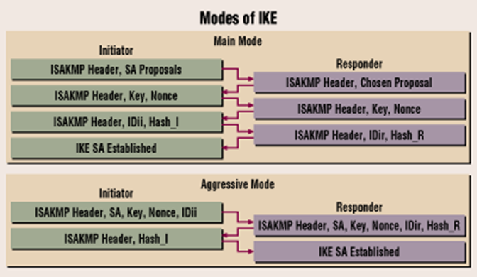
- Waarom main mode veiliger dan aggressive mode
- Waarom wordt toch nog soms voorkeur aan aggressive mode gegeven
- Vanaf welk bericht is het berichtverkeer geëncrypteerd in beide modes
- Authenticatie gebeurt maar in het 5de en 6de bericht, welke impact heeft dit op de beveiliging?
- Nadat er een tunnel is gecreëerd na de 1e fase is er nog een 2e fase die dient voor overleg. Voor wat dient deze 2e fase?
Wireshark trace van het eerste bericht in main mode
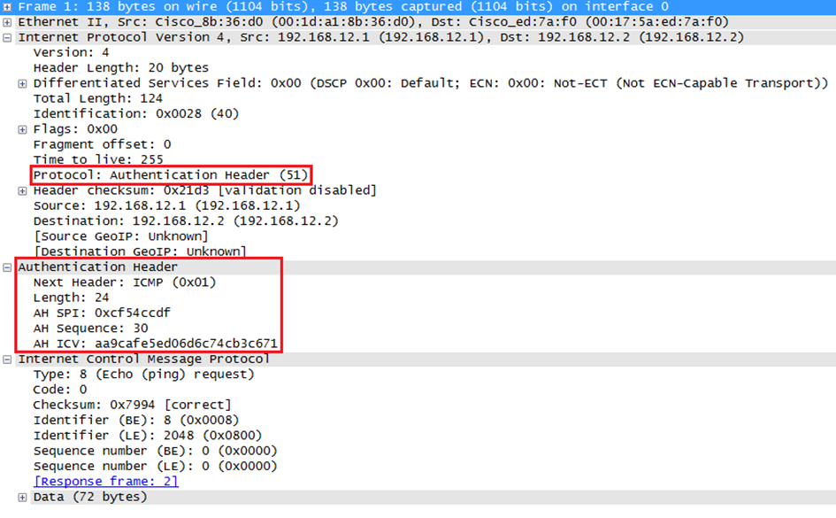
- Leid af uit afbeelding of het transport of tunnel mode is
- Waarom geen random waarde bij het eerste bericht?
- Voor wat dient de AH SPI (Security Parameter Index)
- Voor wat dienen de velden Next header en AH ICV (integrity checksum)
//TODO
-----------Labo-------------
Veelgemaakte fouten ssh

- Server zegt nee omdat de verkeerde key wordt aangeboden

- Je mag niet aan de map
- sudo zal niks uithalen, want je krijgt meer rechten op de lokale machine
- Kopieer eerst het bestand van de lokale machine naar een map waar je wel rechten op hebt, ssh naar de server en voer sudo cp om het bestand dan op de juiste plaats op de remote te zetten

- Gebruiker heeft geen toegang tot het bestand op de lokale machine
- Hier werkt sudo wel
- Je kan wel weer een public key permission denied krijgen omdat hij de default keys van de root gebruiker zal gebruiken voor ssh
Permission denied (public key)
Check 3 dingen:
Zit ik op de juiste user?
Gebruikt de client de juiste key?
- default ~/.ssh/id_*
Heeft de server de juiste key voor de juiste user?
SSH naar private VM zonder routing

In dit scenario is er geen routing van de client naar de nieuwe VM
xxxxxxxxxxssh -NT -L 8888:192.168.64.2:22 student@192.168.132.1# | | |# | | |# Lokale poort | Login van gateway# |# Poort van nieuwe VM# NT -> gewone portforwarding, geen shell
ssh -p 8888 student@localhost

Het bovenste moet je doen op de gateway
Het tweede doet remote port-forwarding
- Al het verkeer dat wordt gestuurd naar een bepaalde poort van de remote server, wordt doorgestuurd over de ssh tunnel naar de lokale server, waarna het doorgestuurd wordt naar het IP adres dat we aangeven.
SSL
Voorziet security bovenop de transportlaag, poort 443
X.509 certificaten